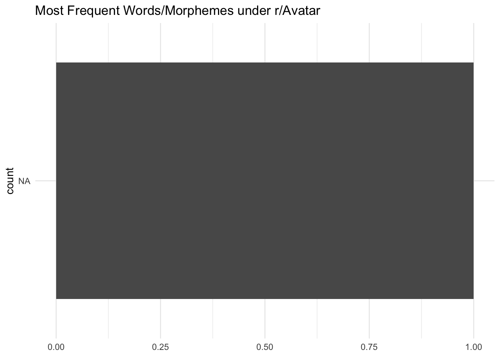

library(RedditExtractoR)
library(tidytext)
library(tidyverse)hw4
Q1 : Top (Content) Words in Conlang Subreddit
top_urls <- find_thread_urls(subreddit = 'Avatar')parsing URLs on page 1...
parsing URLs on page 2...
parsing URLs on page 3...Warning in file(con, "r"): cannot open URL
'https://www.reddit.com/r/Avatar/top.json?t=month&limit=100&after=t3_11gwj82':
HTTP status was '429 Unknown Error'top_urls date_utc
1 <NA>
Tuk\031s Mighty Fangs by @t0017w on Twitter 2023-03-14
I'm a little confused as many people seem to refer to Kiri as the daughter of Eywa when ib canon she's the daughter of Grace's Avatar. Could someone explain the thought process to me? 2023-03-11
Are the Tipani based on Spartans? 2023-03-18
jake figure drawing anatomy study #2 2023-03-15
Drew Tsu\031tey and Sylwanin, because I love them 2023-03-19
My first meme! Do you like it? 2023-03-02
Potential (Vague) First Look at Varang with [Spoiler] in Avatar 3 2023-03-09
Here to bless your feed with the best family photo in 4K 2023-03-27
I saw this on IG and I absolutely love it. (OP is in the picture!) 2023-03-09
Me just after watching Avatar 2 2023-03-26
Na'Vi fan art WIP. I've been testing different lighting setups and working on the pose. Now it's time to make the hair, add textures to the clothes and add more details. 2023-03-26
I should study more expressions to get better at em \xb7 2023-03-06
THE THANATOR DID COCAINE!!! 2023-03-03
Original 16x20 oil on canvas. Give me suggestions for a title in the comments :) 2023-03-17
Lo'ak & Tsireya (TierneySnails) 2023-03-20
Could Quaritch Have Been Court Martialed for Assualting Jake? 2023-03-07
Compilation of new behind the scenes clip from TWOW. 2023-03-04
My avatar related collection :) 2023-03-04
My living room and bedroom 2023-03-09
What is Lo\031ak experiencing here? (WRONG ANSWERS ONLY) 2023-03-28
\030Avatar: The Way of Water\031 Digital Release Includes 3 Hours of Bonus Features (March 28 Digital Release Date) 2023-03-07
"Y\031all need to go to Disney World and ride Flight of Passage." Yeah, I WISH I COULD! =\xb8 2023-03-26
Which character do you guys like more and why? 1. Neteyam 2. Lo\031ak 3. Kiri 2023-03-14
navi in human clothes &.. 2023-03-01
honestly i see it (credit in post) 2023-03-15
I See You | by nikyu0 on Tumblr 2023-03-23
I never see anyone talk about the Na\031Vi outfits much but I had to share this one because Neytiri looks so good. I never noticed she had a different outfit for this scene and I\031m obsessed 2023-03-26
Google search results be like 2023-03-24
The Neytiri Print I got from my wife!! 2023-03-24
a deleted scene of jake and neytiri from Avatar2. I already think that twow lacked of scenes of these two so who knows how much was cut there 2023-03-04
Avatar official merchandise is amazing 2023-03-09
Made myself a 1:34 scale Samson 2023-03-21
Jake sully w/ stitch the crossover we all need (by @useful4max ) 2023-03-19
My Avatar cosplay - took me few hours 2023-03-14
What we feeling about this possible idea? 2023-03-17
RDA marketing of the colonisation of Pandora to families 2023-03-12
What fictional creature do you think would best fit in Pandora's ecosystem and environment? 2023-03-23
same energy ( by gerrrra on Tumblr 2023-03-06
I did a drawing of Tsireya, hope you like it. 2023-03-02
Dad (of the Year) by @Bloody_cat228 on Twitter 2023-03-17
I hope I'm not the only one experiencing this 2023-03-06
We need an Avatar VR game. || Video by parkerlocke on Instagram 2023-03-25
This is getting out of hand. Now, there are four of them 2023-03-08
\034There\031s Always a Bigger Fish\035 2023-03-10
Latest creation featuring all my personal Avatar-selves (human/Spider, Omatikaya, and Metkayina)! Which character design do you like best? I prefer Omatikaya =\x99 IG: @becomingnavi 2023-03-17
All of us getting ready to watch The Way of Water again: 2023-03-28
Can\031t wait to Watch it again 2023-03-07
Just got this beautiful canvas painting of Neytiri in my room! 2023-03-10
I drew the Great Leonopteryx 2023-03-03
where does avatar rank amongst these franchises ? 2023-03-26
if dwayne johnson was in avatar 2023-03-21
Quaritch and (probably) Varang by @zcorbunny on Twitter 2023-03-24
Reading the next shadow and there's a comment about the ash people 2023-03-05
Hands Hands Hands by malotte@KojPeach on Twitter 2023-03-17
Work-in-Progress of a Kiri fanart I am working on. Have put a total of 110 hours into it so far. Let me know if you have any feedback that I can apply before sharing the final version. =\x99 2023-03-22
what y\031all think about this >\024 2023-03-19
Mo\031at probably went through a lot raising Neytiri =\x80 2023-03-07
Thought you guys might like my phone theme. Took a while to get all these pics. 2023-03-22
hello guys! I'm making a fanart of a female Na'Vi in 3D. I've been working with this character for two weeks in my free time, it is still a work in progress. the next step is doing the hair and clothing. hope you like how it's going atm =\x9a=\x9a 2023-03-16
the sully family & spider @huandual 2023-03-04
what was Kiri looking at? 2023-03-28
Neytiri and Seze flash piece I finished/updated from my previous one which was a bit how ya goin. Cheers! 2023-03-28
How could anyone NOT be pumped for Avatar Franchise Supremacy? 2023-03-18
Just saw this pic and I wanted to post it. She\031s looks so amazing 2023-03-11
What connection does Norm have with the Olangi Clan? 2023-03-17
"cutie patootie & her weird little boyfriend" by ochomonos on Tumblr 2023-03-19
Another quick meme (audio) (Avatar 1) 2023-03-01
Why was Tuk conceived on Christmas? 2023-03-12
Avatar - Drawing Neityri with color pencils 2023-03-10
Got a nice surprise in the mail today, almost forgot I ordered these months ago. Collectible Avatar: The Way of Water stamps from NZ Post \t\017 2023-03-22
The dangers of psychoactive substances 2023-03-22
Here, have another Grug moment 2023-03-05
A GREAT Leonopteryx by @arcmimus on Twitter 2023-03-10
neteyam really shouldn't be brought back in avatar 3 2023-03-02
A painting of Tsireya I did in my sketchbook! 2023-03-01
An older-ish version of Aonung with tattoos very similar to Tonowari's :) - art by me 2023-03-23
Here\031s a sketch I just finished 2023-03-18
No one will ever change my mind but I think Zoe Saldana was robbed of awards for her role as neytiri in the first movie looking at the behind the scenes made me truly realize how she was robbed 2023-03-13
*drooling into the couch* 2023-03-08
Maybe there's hope yet? It was quite the wait! 2023-03-05
I rewatched Avatar (2009) to prep for the digital release of A:TWoW. <\037 2023-03-27
This article sounds like it's describing Unobtanium 2023-03-14
Avatar: The Way of Water wins Oscar for Best Visual 2023-03-13
this is great,hope we get avatar lego game 2023-03-11
The BakeKing on Facebook, made a Neytiri cake. 2023-03-09
I feel like Jake\031s status in the military is overlooked by most people\024 because most people don\031t know much about the military or what the \034First Recon.\035 title means. 2023-03-21
\030Avatar 3\031 Will Introduce Two New Na'vi Tribes, Producer Jon Landau Reveals 2023-03-22
A video of the ikran animatronic in Singapore\031s Avatar, The experience I took back in December 2023-03-01
Donato-Dias has a message 2023-02-28
Neteyam\031s smile melted my heart=-=\x99 (Also& Lo\031ak& lol) 2023-03-26
Will quaritch get reprimanded or fired in avatar 3 for losing to jake sully again and getting that whaling ship destroyed along with 80% of the entire crew killed? 2023-03-20
Me after hearing about people debating on how exactly do the na'vi mate: 2023-03-04
What deleted scenes do you think we'll see in Avatar 3? 2023-03-28
Do female na'vi wear battle band? After the young Na'vi has completed Iknimaya, they receive a battle band. But in the film, only male na'vi in both Omatikaya and Metcayina and also Tayrangi wore them. So the question is >\024 2023-03-03
If Duolingo has Klingon and High Valyrion, Why not add Na'vi too? 2023-03-26
Yo i'm straight up Angry that this fuckers don't exist =$=$=$. (I want one =\024) 2023-03-08
My Xbox 4k Wallpaper. Her Face looks so real. 2023-03-21
Tonowari and Quaritch deluxe action figures =\r 2023-03-26
Finished him finally ^^ Now you can make him boogie to whatever song you want 2023-03-12
~ Avatar based of my culture ~ (tiktok trend) 2023-03-03
quaritch watch himself die,found his rotten corpse,met his son for the first time and see the person who killed him all in one day. 2023-02-28
The human Sully children by @CrazyTom0712 on Twitter 2023-03-17
Na\031vi model I created (OC) 2023-03-17
Best Visual Effects goes to "Avatar: The Way of Water | 2023 Oscars 2023-03-13
If they can make half a dozen Hogwarts sets, they can make 1 Valkrei! 2023-03-15
Grace's Avatar is 10ft tall, she is taller than even Tonowari!!! 2023-03-08
A Spider perspective from 3 points of view 2023-03-10
Old picture I saved from years ago. Aged like a fine wine 2023-03-13
PRAISE EYWA&SHE HEARD US! 2023-03-16
Avatar > Every Disney Star Wars movie 2023-03-23
Why do people complain about quaritch being the main villian of the series ? 2023-03-11
I wish I could unsee this 2023-03-08
It was love at first sight 2023-03-03
surprisingly,never knew this! 2023-03-25
i will teach you our ways so you do not suffer the shame of being... useless. 2023-03-21
I still haven't recovered 2023-03-13
Why is Jake always referred to as \034jake sully\035 instead of just jake ? 2023-03-10
What do you think Jake tell his kids when they ask him what life on earth was like? 2023-03-15
Avatar 3? No, Revenge Of The Sith. 2023-03-05
I feel like Ronal doesn\031t get enough love; she\031s pregnant the whole movie but is ready to ride into battle without a second thought. My fav 2023-03-05
Never noticed how skinny Jake was during the beginning like they really put my boy to work=\x80 2023-03-13
Sigourney Weaver (Dr.Grace Augustine) when she was young! 2023-03-09
Found this on twitter lmao shoutout @TSLREYUH 2023-03-16
good question =\002 it\031s getting confusing 2023-03-23
My twin sister doesnt agree with me 2023-03-26
Human Aonung, Tsireya and Rotxo by @CrazyTom0712 on Twitter 2023-03-18
What\031s your favorite Avatar line ? 2023-03-25
Why do people say the navi have sex with their hair ? It\031s very clear they have a womb implying they have sex the way humans do hence the pregnant bellies in avatar 2 2023-02-28
The Na'vi don't live in Paradise. Or do they? Do we? 2023-03-03
Tuk Hiss Best Hiss. That's all. 2023-03-27
Why is neytiri always showed as the icon of the avatar series when Jake is the main character ? 2023-03-23
Today is Tsu'tey's birthday! 2023-03-26
Neytiri/Jake/Quaritch by @HiKu_20818 on Twitter 2023-03-10
I see you, I mean it\031s hard not to ># I got this and 4-5 different ones that I\031ve not unravelled other than a neytiri one, not quite sure what to do with them yet lol 2023-03-08
Imagine being an uncontacted navi and then one day just seeing this thing walking thru the forest. I think we underestimate how weird all of this is for them. They could still compare guns to their bows and arrows but how will you rationalise something that looks like... 2023-03-19
The absolute chokehold avatar has had on me since I was a little girl -=\002 2023-03-16
Don't know who made this, but this is the coolest group pic yet 2023-03-03
Why do people in the avatar community get so butthurt when you say your a rda supporter? Lol most of us just like the cool tech and the marines, it\031s all fictional anyways 2023-03-02
Which one looks better : Avatar 1 or Avatar 2 Neytiri ? 2023-03-19
according to tiktok neteyam ranks 3rd as the character with the most views. 2023-03-19
Tonowari has to be the greatest dilf in avatar yet. 2023-03-06
This is dumb, and I do apologize. 2023-03-06
Just released in Australia 2023-03-27
Why is avatar called a white savior movie ? Jake didn\031t save the navi, Eywa did. Jake also was saved by neytiri so that Criticism doesn\031t make sense. 2023-03-10
I feel bad for Poor Norm. 2023-03-03
the avatar obsession is crazy =- 2023-03-25
Avatar: The Way of Water now available to pre-order! $19.99 for 4K! 2023-03-21
"A son for a Son" - Jake Sully, what does he mean? Neytiri said it in context of revenge and killing 2023-02-28
STOP HURTING NEYTIRI, JIM! >\xf5 2023-03-07
Dad Quaritch and baby Spider>z artist: bluekernal on Twitter 2023-03-20
everyone seems to be comparing every movie to avatar now 2023-03-19
I\031m sorry y\031all but Tsu\031tey was hotter than jake. This truth has to be said 2023-03-11
This might sound dumb, but why is the camera there? 2023-03-07
5 DAYS AWAY (11 days for me? >r>r>r) 2023-03-23
What is Neteyam & Lo'ak looking at? (wrong answers only) 2023-03-13
Just a Tsireya appreciation post because she\031s adorable and I love her 2023-03-04
What Filming \030Avatar: The Way of Water\031 Actually Looked Like on Set 2023-03-25
AVATAR FRONTIERS OF PANDORA Pre Order Bonus 2023-03-22
Tsireya has the most magnificent hair imo. Who else has beautiful hair in A1-2? 2023-03-20
This is what Neteyam olo\031eyktan could\031ve looked like and I\031m not okay (Twitter @Ayli_te i guess) 2023-03-21
Who\031s a character you absolutely despise in avatar ? 2023-03-16
How do you guys think ronal will react about lo\031aks and tsireya relationship . Especially since I don\031t think she\031s to fond of lo\031ak 2023-03-15
Did Neytiri have stretch marks from pregnancy? I didn\031t see any but she had 3 kids, maybe the Na\031vi heal better from pregnancy? 2023-03-02
Jake vs Quaritch (25 characters) 2023-03-05
What Character you wanna see throughout the rest of the series? Tuk is an honorable mention for me 2023-03-10
The beginning of Avatar 3 be like: 2023-03-28
Spider when Jake asks him how Quaritch is still alive 2023-03-24
What did Tsu'tey see? (Wrong Answers Only) 2023-03-07
Iconic Duo by @t0017w on Twitter 2023-03-21
I grew up with avatar and now that I\031m 18 with money I can buy whatever I want, my avatar collection is slowly growing :\017 2023-03-15
SORRY, but Neteyam will likely be forever the \034youngest\035 Sully. (UNLESS MORE CHILDREN DIE) Lo\031ak will start to tower over him when he visits him in the Spirit Tree. =\x94=\x94=\x94 2023-03-23
I guess the fuel source explodes or something idk 2023-02-28
they captured her essences so much,one of the best avatar characters=\v 2023-03-24
Ronal McDonal. I made this because i could (and yes that's "i'm lovin' it" in Na'vi. Shoutout to those who helped me out on that) 2023-03-02
Zoe Salda\xf1a confirms \030AVATAR 3\031 is almost done: \034Yeah, I mean, we\031re gonna go back this summer and finish it up. We\031re 70% done there. But, we have time.\035 (Via: @etnow) 2023-03-20
I might be a bit addicted ngl 2023-03-15
So I can watch over & over again like the first one 2023-03-08
'90s Moment by malotte@KojPeach on Twitter 2023-03-13
do you think quaritch will ever stop being a Xenophobe/Racist ? 2023-03-19
Lo\031ak was my favourite so i suppose i had to draw him 2023-03-21
Got a funny feeling this is gonna happen 2023-03-11
I found a Neytiri funko pop in the wild. Tho according to Amazon, these aren't supposed to out yet until July 1st... thoughts? bought from gamestop at the mall 2023-03-03
Home video release = more merch. 2023-03-06
What Skxawng at Hot Toys made Eytukan's bow so small? This figure is nearly four hundred USD and they make mistakes like this. 2023-03-01
kiri,spider and loak @lesspir 2023-03-27
amazing neytiri artwork @nacha 2023-03-22
How much money do you think they saved with this shot? 2023-03-28
is this battle superior to the og avatar final battle ? 2023-03-27
My prediction for Avatar 3 2023-03-04
my attempt at a Jake anatomy study (he\031s mine btw) i had a lot of fun with the small details in the hair and clothing. the omatikaya are a weaving community after all 2023-03-13
How will Kiri react when she finds out spider\031s dad killed her mom ? 2023-03-03
FIRST LOOK at the upcoming volcanic region(ash people),desert region(windtraders) and arctic region courtesy of the way of water special features ! 2023-03-28
I made this on my phone in 3 minutes 2023-03-26
Honestly, Quaritch is such a fun character, despite his genocidal tendencies 2023-03-12
Avatar meme oc (from a deleted scene, perhaps deleted for the reason this meme exists) 2023-03-18
This just came from the mail ! 2023-03-09
the team used pictures of when sigourney was younger references to give kiri her youthful look 2023-03-27
Can\031t wait for Lo\031ak to be our narrator in Avatar 3 2023-03-08
Another spin on Exostrike's meme 2023-03-12
Neytiri is now an icon on Disney plus, also new tech specs hinting the movie may arrive soon 2023-03-22
timestamp
1 NA
Tuk\031s Mighty Fangs by @t0017w on Twitter 1678752586
I'm a little confused as many people seem to refer to Kiri as the daughter of Eywa when ib canon she's the daughter of Grace's Avatar. Could someone explain the thought process to me? 1678501151
Are the Tipani based on Spartans? 1679145081
jake figure drawing anatomy study #2 1678871886
Drew Tsu\031tey and Sylwanin, because I love them 1679230095
My first meme! Do you like it? 1677752201
Potential (Vague) First Look at Varang with [Spoiler] in Avatar 3 1678399580
Here to bless your feed with the best family photo in 4K 1679953626
I saw this on IG and I absolutely love it. (OP is in the picture!) 1678320558
Me just after watching Avatar 2 1679827581
Na'Vi fan art WIP. I've been testing different lighting setups and working on the pose. Now it's time to make the hair, add textures to the clothes and add more details. 1679833703
I should study more expressions to get better at em \xb7 1678101480
THE THANATOR DID COCAINE!!! 1677807092
Original 16x20 oil on canvas. Give me suggestions for a title in the comments :) 1679070623
Lo'ak & Tsireya (TierneySnails) 1679342933
Could Quaritch Have Been Court Martialed for Assualting Jake? 1678175008
Compilation of new behind the scenes clip from TWOW. 1677942702
My avatar related collection :) 1677968837
My living room and bedroom 1678364213
What is Lo\031ak experiencing here? (WRONG ANSWERS ONLY) 1680000961
\030Avatar: The Way of Water\031 Digital Release Includes 3 Hours of Bonus Features (March 28 Digital Release Date) 1678197717
"Y\031all need to go to Disney World and ride Flight of Passage." Yeah, I WISH I COULD! =\xb8 1679835949
Which character do you guys like more and why? 1. Neteyam 2. Lo\031ak 3. Kiri 1678805536
navi in human clothes &.. 1677641336
honestly i see it (credit in post) 1678881103
I See You | by nikyu0 on Tumblr 1679585233
I never see anyone talk about the Na\031Vi outfits much but I had to share this one because Neytiri looks so good. I never noticed she had a different outfit for this scene and I\031m obsessed 1679861932
Google search results be like 1679636501
The Neytiri Print I got from my wife!! 1679633910
a deleted scene of jake and neytiri from Avatar2. I already think that twow lacked of scenes of these two so who knows how much was cut there 1677922517
Avatar official merchandise is amazing 1678336943
Made myself a 1:34 scale Samson 1679391143
Jake sully w/ stitch the crossover we all need (by @useful4max ) 1679242038
My Avatar cosplay - took me few hours 1678779182
What we feeling about this possible idea? 1679064781
RDA marketing of the colonisation of Pandora to families 1678620644
What fictional creature do you think would best fit in Pandora's ecosystem and environment? 1679581681
same energy ( by gerrrra on Tumblr 1678115448
I did a drawing of Tsireya, hope you like it. 1677797011
Dad (of the Year) by @Bloody_cat228 on Twitter 1679020143
I hope I'm not the only one experiencing this 1678066716
We need an Avatar VR game. || Video by parkerlocke on Instagram 1679760515
This is getting out of hand. Now, there are four of them 1678305718
\034There\031s Always a Bigger Fish\035 1678439838
Latest creation featuring all my personal Avatar-selves (human/Spider, Omatikaya, and Metkayina)! Which character design do you like best? I prefer Omatikaya =\x99 IG: @becomingnavi 1679091085
All of us getting ready to watch The Way of Water again: 1679970990
Can\031t wait to Watch it again 1678203444
Just got this beautiful canvas painting of Neytiri in my room! 1678465945
I drew the Great Leonopteryx 1677839609
where does avatar rank amongst these franchises ? 1679870070
if dwayne johnson was in avatar 1679426325
Quaritch and (probably) Varang by @zcorbunny on Twitter 1679660532
Reading the next shadow and there's a comment about the ash people 1678002852
Hands Hands Hands by malotte@KojPeach on Twitter 1679020711
Work-in-Progress of a Kiri fanart I am working on. Have put a total of 110 hours into it so far. Let me know if you have any feedback that I can apply before sharing the final version. =\x99 1679511508
what y\031all think about this >\024 1679204737
Mo\031at probably went through a lot raising Neytiri =\x80 1678148947
Thought you guys might like my phone theme. Took a while to get all these pics. 1679480164
hello guys! I'm making a fanart of a female Na'Vi in 3D. I've been working with this character for two weeks in my free time, it is still a work in progress. the next step is doing the hair and clothing. hope you like how it's going atm =\x9a=\x9a 1678999196
the sully family & spider @huandual 1677891018
what was Kiri looking at? 1680038286
Neytiri and Seze flash piece I finished/updated from my previous one which was a bit how ya goin. Cheers! 1679986394
How could anyone NOT be pumped for Avatar Franchise Supremacy? 1679161365
Just saw this pic and I wanted to post it. She\031s looks so amazing 1678572223
What connection does Norm have with the Olangi Clan? 1679069490
"cutie patootie & her weird little boyfriend" by ochomonos on Tumblr 1679261448
Another quick meme (audio) (Avatar 1) 1677677098
Why was Tuk conceived on Christmas? 1678637272
Avatar - Drawing Neityri with color pencils 1678470916
Got a nice surprise in the mail today, almost forgot I ordered these months ago. Collectible Avatar: The Way of Water stamps from NZ Post \t\017 1679499248
The dangers of psychoactive substances 1679503150
Here, have another Grug moment 1678056676
A GREAT Leonopteryx by @arcmimus on Twitter 1678480241
neteyam really shouldn't be brought back in avatar 3 1677751854
A painting of Tsireya I did in my sketchbook! 1677713822
An older-ish version of Aonung with tattoos very similar to Tonowari's :) - art by me 1679568064
Here\031s a sketch I just finished 1679179927
No one will ever change my mind but I think Zoe Saldana was robbed of awards for her role as neytiri in the first movie looking at the behind the scenes made me truly realize how she was robbed 1678682055
*drooling into the couch* 1678293633
Maybe there's hope yet? It was quite the wait! 1678021522
I rewatched Avatar (2009) to prep for the digital release of A:TWoW. <\037 1679937014
This article sounds like it's describing Unobtanium 1678810945
Avatar: The Way of Water wins Oscar for Best Visual 1678674323
this is great,hope we get avatar lego game 1678518197
The BakeKing on Facebook, made a Neytiri cake. 1678320074
I feel like Jake\031s status in the military is overlooked by most people\024 because most people don\031t know much about the military or what the \034First Recon.\035 title means. 1679391345
\030Avatar 3\031 Will Introduce Two New Na'vi Tribes, Producer Jon Landau Reveals 1679490651
A video of the ikran animatronic in Singapore\031s Avatar, The experience I took back in December 1677682827
Donato-Dias has a message 1677605560
Neteyam\031s smile melted my heart=-=\x99 (Also& Lo\031ak& lol) 1679875073
Will quaritch get reprimanded or fired in avatar 3 for losing to jake sully again and getting that whaling ship destroyed along with 80% of the entire crew killed? 1679329833
Me after hearing about people debating on how exactly do the na'vi mate: 1677923308
What deleted scenes do you think we'll see in Avatar 3? 1679963328
Do female na'vi wear battle band? After the young Na'vi has completed Iknimaya, they receive a battle band. But in the film, only male na'vi in both Omatikaya and Metcayina and also Tayrangi wore them. So the question is >\024 1677866784
If Duolingo has Klingon and High Valyrion, Why not add Na'vi too? 1679845345
Yo i'm straight up Angry that this fuckers don't exist =$=$=$. (I want one =\024) 1678298069
My Xbox 4k Wallpaper. Her Face looks so real. 1679411641
Tonowari and Quaritch deluxe action figures =\r 1679851692
Finished him finally ^^ Now you can make him boogie to whatever song you want 1678593686
~ Avatar based of my culture ~ (tiktok trend) 1677836106
quaritch watch himself die,found his rotten corpse,met his son for the first time and see the person who killed him all in one day. 1677557045
The human Sully children by @CrazyTom0712 on Twitter 1679081855
Na\031vi model I created (OC) 1679061802
Best Visual Effects goes to "Avatar: The Way of Water | 2023 Oscars 1678674365
If they can make half a dozen Hogwarts sets, they can make 1 Valkrei! 1678855927
Grace's Avatar is 10ft tall, she is taller than even Tonowari!!! 1678319364
A Spider perspective from 3 points of view 1678485043
Old picture I saved from years ago. Aged like a fine wine 1678751469
PRAISE EYWA&SHE HEARD US! 1679002453
Avatar > Every Disney Star Wars movie 1679603848
Why do people complain about quaritch being the main villian of the series ? 1678545987
I wish I could unsee this 1678233750
It was love at first sight 1677823748
surprisingly,never knew this! 1679706716
i will teach you our ways so you do not suffer the shame of being... useless. 1679433862
I still haven't recovered 1678728325
Why is Jake always referred to as \034jake sully\035 instead of just jake ? 1678470699
What do you think Jake tell his kids when they ask him what life on earth was like? 1678904188
Avatar 3? No, Revenge Of The Sith. 1678051885
I feel like Ronal doesn\031t get enough love; she\031s pregnant the whole movie but is ready to ride into battle without a second thought. My fav 1677982033
Never noticed how skinny Jake was during the beginning like they really put my boy to work=\x80 1678713406
Sigourney Weaver (Dr.Grace Augustine) when she was young! 1678343511
Found this on twitter lmao shoutout @TSLREYUH 1678974475
good question =\002 it\031s getting confusing 1679572198
My twin sister doesnt agree with me 1679833316
Human Aonung, Tsireya and Rotxo by @CrazyTom0712 on Twitter 1679162203
What\031s your favorite Avatar line ? 1679753117
Why do people say the navi have sex with their hair ? It\031s very clear they have a womb implying they have sex the way humans do hence the pregnant bellies in avatar 2 1677628668
The Na'vi don't live in Paradise. Or do they? Do we? 1677887622
Tuk Hiss Best Hiss. That's all. 1679944176
Why is neytiri always showed as the icon of the avatar series when Jake is the main character ? 1679530473
Today is Tsu'tey's birthday! 1679846288
Neytiri/Jake/Quaritch by @HiKu_20818 on Twitter 1678406785
I see you, I mean it\031s hard not to ># I got this and 4-5 different ones that I\031ve not unravelled other than a neytiri one, not quite sure what to do with them yet lol 1678281199
Imagine being an uncontacted navi and then one day just seeing this thing walking thru the forest. I think we underestimate how weird all of this is for them. They could still compare guns to their bows and arrows but how will you rationalise something that looks like... 1679260751
The absolute chokehold avatar has had on me since I was a little girl -=\002 1678950589
Don't know who made this, but this is the coolest group pic yet 1677808289
Why do people in the avatar community get so butthurt when you say your a rda supporter? Lol most of us just like the cool tech and the marines, it\031s all fictional anyways 1677776665
Which one looks better : Avatar 1 or Avatar 2 Neytiri ? 1679190991
according to tiktok neteyam ranks 3rd as the character with the most views. 1679234781
Tonowari has to be the greatest dilf in avatar yet. 1678071736
This is dumb, and I do apologize. 1678066418
Just released in Australia 1679933561
Why is avatar called a white savior movie ? Jake didn\031t save the navi, Eywa did. Jake also was saved by neytiri so that Criticism doesn\031t make sense. 1678464641
I feel bad for Poor Norm. 1677859328
the avatar obsession is crazy =- 1679781843
Avatar: The Way of Water now available to pre-order! $19.99 for 4K! 1679372663
"A son for a Son" - Jake Sully, what does he mean? Neytiri said it in context of revenge and killing 1677605484
STOP HURTING NEYTIRI, JIM! >\xf5 1678205835
Dad Quaritch and baby Spider>z artist: bluekernal on Twitter 1679341301
everyone seems to be comparing every movie to avatar now 1679189408
I\031m sorry y\031all but Tsu\031tey was hotter than jake. This truth has to be said 1678576197
This might sound dumb, but why is the camera there? 1678186482
5 DAYS AWAY (11 days for me? >r>r>r) 1679584677
What is Neteyam & Lo'ak looking at? (wrong answers only) 1678693109
Just a Tsireya appreciation post because she\031s adorable and I love her 1677934160
What Filming \030Avatar: The Way of Water\031 Actually Looked Like on Set 1679734138
AVATAR FRONTIERS OF PANDORA Pre Order Bonus 1679488647
Tsireya has the most magnificent hair imo. Who else has beautiful hair in A1-2? 1679332909
This is what Neteyam olo\031eyktan could\031ve looked like and I\031m not okay (Twitter @Ayli_te i guess) 1679359898
Who\031s a character you absolutely despise in avatar ? 1679000905
How do you guys think ronal will react about lo\031aks and tsireya relationship . Especially since I don\031t think she\031s to fond of lo\031ak 1678894816
Did Neytiri have stretch marks from pregnancy? I didn\031t see any but she had 3 kids, maybe the Na\031vi heal better from pregnancy? 1677723375
Jake vs Quaritch (25 characters) 1678031274
What Character you wanna see throughout the rest of the series? Tuk is an honorable mention for me 1678412244
The beginning of Avatar 3 be like: 1680004009
Spider when Jake asks him how Quaritch is still alive 1679686227
What did Tsu'tey see? (Wrong Answers Only) 1678203969
Iconic Duo by @t0017w on Twitter 1679398251
I grew up with avatar and now that I\031m 18 with money I can buy whatever I want, my avatar collection is slowly growing :\017 1678843630
SORRY, but Neteyam will likely be forever the \034youngest\035 Sully. (UNLESS MORE CHILDREN DIE) Lo\031ak will start to tower over him when he visits him in the Spirit Tree. =\x94=\x94=\x94 1679590399
I guess the fuel source explodes or something idk 1677605222
they captured her essences so much,one of the best avatar characters=\v 1679687107
Ronal McDonal. I made this because i could (and yes that's "i'm lovin' it" in Na'vi. Shoutout to those who helped me out on that) 1677782571
Zoe Salda\xf1a confirms \030AVATAR 3\031 is almost done: \034Yeah, I mean, we\031re gonna go back this summer and finish it up. We\031re 70% done there. But, we have time.\035 (Via: @etnow) 1679313047
I might be a bit addicted ngl 1678896015
So I can watch over & over again like the first one 1678319001
'90s Moment by malotte@KojPeach on Twitter 1678705258
do you think quaritch will ever stop being a Xenophobe/Racist ? 1679250803
Lo\031ak was my favourite so i suppose i had to draw him 1679427762
Got a funny feeling this is gonna happen 1678577907
I found a Neytiri funko pop in the wild. Tho according to Amazon, these aren't supposed to out yet until July 1st... thoughts? bought from gamestop at the mall 1677852029
Home video release = more merch. 1678143080
What Skxawng at Hot Toys made Eytukan's bow so small? This figure is nearly four hundred USD and they make mistakes like this. 1677671816
kiri,spider and loak @lesspir 1679953727
amazing neytiri artwork @nacha 1679466663
How much money do you think they saved with this shot? 1680002467
is this battle superior to the og avatar final battle ? 1679923160
My prediction for Avatar 3 1677956744
my attempt at a Jake anatomy study (he\031s mine btw) i had a lot of fun with the small details in the hair and clothing. the omatikaya are a weaving community after all 1678693988
How will Kiri react when she finds out spider\031s dad killed her mom ? 1677887077
FIRST LOOK at the upcoming volcanic region(ash people),desert region(windtraders) and arctic region courtesy of the way of water special features ! 1679980593
I made this on my phone in 3 minutes 1679794504
Honestly, Quaritch is such a fun character, despite his genocidal tendencies 1678629898
Avatar meme oc (from a deleted scene, perhaps deleted for the reason this meme exists) 1679142029
This just came from the mail ! 1678385016
the team used pictures of when sigourney was younger references to give kiri her youthful look 1679955026
Can\031t wait for Lo\031ak to be our narrator in Avatar 3 1678246737
Another spin on Exostrike's meme 1678628691
Neytiri is now an icon on Disney plus, also new tech specs hinting the movie may arrive soon 1679525649
title
1 <NA>
Tuk\031s Mighty Fangs by @t0017w on Twitter Tuk\031s Mighty Fangs by @t0017w on Twitter
I'm a little confused as many people seem to refer to Kiri as the daughter of Eywa when ib canon she's the daughter of Grace's Avatar. Could someone explain the thought process to me? I'm a little confused as many people seem to refer to Kiri as the daughter of Eywa when ib canon she's the daughter of Grace's Avatar. Could someone explain the thought process to me?
Are the Tipani based on Spartans? Are the Tipani based on Spartans?
jake figure drawing anatomy study #2 jake figure drawing anatomy study #2
Drew Tsu\031tey and Sylwanin, because I love them Drew Tsu\031tey and Sylwanin, because I love them
My first meme! Do you like it? My first meme! Do you like it?
Potential (Vague) First Look at Varang with [Spoiler] in Avatar 3 Potential (Vague) First Look at Varang with [Spoiler] in Avatar 3
Here to bless your feed with the best family photo in 4K Here to bless your feed with the best family photo in 4K
I saw this on IG and I absolutely love it. (OP is in the picture!) I saw this on IG and I absolutely love it. (OP is in the picture!)
Me just after watching Avatar 2 Me just after watching Avatar 2
Na'Vi fan art WIP. I've been testing different lighting setups and working on the pose. Now it's time to make the hair, add textures to the clothes and add more details. Na'Vi fan art WIP. I've been testing different lighting setups and working on the pose. Now it's time to make the hair, add textures to the clothes and add more details.
I should study more expressions to get better at em \xb7 I should study more expressions to get better at em
THE THANATOR DID COCAINE!!! THE THANATOR DID COCAINE!!!
Original 16x20 oil on canvas. Give me suggestions for a title in the comments :) Original 16x20 oil on canvas. Give me suggestions for a title in the comments :)
Lo'ak & Tsireya (TierneySnails) Lo'ak & Tsireya (TierneySnails)
Could Quaritch Have Been Court Martialed for Assualting Jake? Could Quaritch Have Been Court Martialed for Assualting Jake?
Compilation of new behind the scenes clip from TWOW. Compilation of new behind the scenes clip from TWOW.
My avatar related collection :) My avatar related collection :)
My living room and bedroom My living room and bedroom
What is Lo\031ak experiencing here? (WRONG ANSWERS ONLY) What is Lo\031ak experiencing here? (WRONG ANSWERS ONLY)
\030Avatar: The Way of Water\031 Digital Release Includes 3 Hours of Bonus Features (March 28 Digital Release Date) \030Avatar: The Way of Water\031 Digital Release Includes 3 Hours of Bonus Features (March 28 Digital Release Date)
"Y\031all need to go to Disney World and ride Flight of Passage." Yeah, I WISH I COULD! =\xb8 "Y\031all need to go to Disney World and ride Flight of Passage." Yeah, I WISH I COULD! =
Which character do you guys like more and why? 1. Neteyam 2. Lo\031ak 3. Kiri Which character do you guys like more and why? 1. Neteyam 2. Lo\031ak 3. Kiri
navi in human clothes &.. navi in human clothes &..
honestly i see it (credit in post) honestly i see it (credit in post)
I See You | by nikyu0 on Tumblr I See You | by nikyu0 on Tumblr
I never see anyone talk about the Na\031Vi outfits much but I had to share this one because Neytiri looks so good. I never noticed she had a different outfit for this scene and I\031m obsessed I never see anyone talk about the Na\031Vi outfits much but I had to share this one because Neytiri looks so good. I never noticed she had a different outfit for this scene and I\031m obsessed
Google search results be like Google search results be like
The Neytiri Print I got from my wife!! The Neytiri Print I got from my wife!!
a deleted scene of jake and neytiri from Avatar2. I already think that twow lacked of scenes of these two so who knows how much was cut there a deleted scene of jake and neytiri from Avatar2. I already think that twow lacked of scenes of these two so who knows how much was cut there
Avatar official merchandise is amazing Avatar official merchandise is amazing
Made myself a 1:34 scale Samson Made myself a 1:34 scale Samson
Jake sully w/ stitch the crossover we all need (by @useful4max ) Jake sully w/ stitch the crossover we all need (by @useful4max )
My Avatar cosplay - took me few hours My Avatar cosplay - took me few hours
What we feeling about this possible idea? What we feeling about this possible idea?
RDA marketing of the colonisation of Pandora to families RDA marketing of the colonisation of Pandora to families
What fictional creature do you think would best fit in Pandora's ecosystem and environment? What fictional creature do you think would best fit in Pandora's ecosystem and environment?
same energy ( by gerrrra on Tumblr same energy ( by gerrrra on Tumblr
I did a drawing of Tsireya, hope you like it. I did a drawing of Tsireya, hope you like it.
Dad (of the Year) by @Bloody_cat228 on Twitter Dad (of the Year) by @Bloody_cat228 on Twitter
I hope I'm not the only one experiencing this I hope I'm not the only one experiencing this
We need an Avatar VR game. || Video by parkerlocke on Instagram We need an Avatar VR game. || Video by parkerlocke on Instagram
This is getting out of hand. Now, there are four of them This is getting out of hand. Now, there are four of them
\034There\031s Always a Bigger Fish\035 \034There\031s Always a Bigger Fish\035
Latest creation featuring all my personal Avatar-selves (human/Spider, Omatikaya, and Metkayina)! Which character design do you like best? I prefer Omatikaya =\x99 IG: @becomingnavi Latest creation featuring all my personal Avatar-selves (human/Spider, Omatikaya, and Metkayina)! Which character design do you like best? I prefer Omatikaya =\u0099 IG: @becomingnavi
All of us getting ready to watch The Way of Water again: All of us getting ready to watch The Way of Water again:
Can\031t wait to Watch it again Can\031t wait to Watch it again
Just got this beautiful canvas painting of Neytiri in my room! Just got this beautiful canvas painting of Neytiri in my room!
I drew the Great Leonopteryx I drew the Great Leonopteryx
where does avatar rank amongst these franchises ? where does avatar rank amongst these franchises ?
if dwayne johnson was in avatar if dwayne johnson was in avatar
Quaritch and (probably) Varang by @zcorbunny on Twitter Quaritch and (probably) Varang by @zcorbunny on Twitter
Reading the next shadow and there's a comment about the ash people Reading the next shadow and there's a comment about the ash people
Hands Hands Hands by malotte@KojPeach on Twitter Hands Hands Hands by malotte@KojPeach on Twitter
Work-in-Progress of a Kiri fanart I am working on. Have put a total of 110 hours into it so far. Let me know if you have any feedback that I can apply before sharing the final version. =\x99 Work-in-Progress of a Kiri fanart I am working on. Have put a total of 110 hours into it so far. Let me know if you have any feedback that I can apply before sharing the final version. =\u0099
what y\031all think about this >\024 what y\031all think about this >\024
Mo\031at probably went through a lot raising Neytiri =\x80 Mo\031at probably went through a lot raising Neytiri =\u0080
Thought you guys might like my phone theme. Took a while to get all these pics. Thought you guys might like my phone theme. Took a while to get all these pics.
hello guys! I'm making a fanart of a female Na'Vi in 3D. I've been working with this character for two weeks in my free time, it is still a work in progress. the next step is doing the hair and clothing. hope you like how it's going atm =\x9a=\x9a hello guys! I'm making a fanart of a female Na'Vi in 3D. I've been working with this character for two weeks in my free time, it is still a work in progress. the next step is doing the hair and clothing. hope you like how it's going atm =\u009a=\u009a
the sully family & spider @huandual the sully family & spider @huandual
what was Kiri looking at? what was Kiri looking at?
Neytiri and Seze flash piece I finished/updated from my previous one which was a bit how ya goin. Cheers! Neytiri and Seze flash piece I finished/updated from my previous one which was a bit how ya goin. Cheers!
How could anyone NOT be pumped for Avatar Franchise Supremacy? How could anyone NOT be pumped for Avatar Franchise Supremacy?
Just saw this pic and I wanted to post it. She\031s looks so amazing Just saw this pic and I wanted to post it. She\031s looks so amazing
What connection does Norm have with the Olangi Clan? What connection does Norm have with the Olangi Clan?
"cutie patootie & her weird little boyfriend" by ochomonos on Tumblr "cutie patootie & her weird little boyfriend" by ochomonos on Tumblr
Another quick meme (audio) (Avatar 1) Another quick meme (audio) (Avatar 1)
Why was Tuk conceived on Christmas? Why was Tuk conceived on Christmas?
Avatar - Drawing Neityri with color pencils Avatar - Drawing Neityri with color pencils
Got a nice surprise in the mail today, almost forgot I ordered these months ago. Collectible Avatar: The Way of Water stamps from NZ Post \t\017 Got a nice surprise in the mail today, almost forgot I ordered these months ago. Collectible Avatar: The Way of Water stamps from NZ Post \t\017
The dangers of psychoactive substances The dangers of psychoactive substances
Here, have another Grug moment Here, have another Grug moment
A GREAT Leonopteryx by @arcmimus on Twitter A GREAT Leonopteryx by @arcmimus on Twitter
neteyam really shouldn't be brought back in avatar 3 neteyam really shouldn't be brought back in avatar 3
A painting of Tsireya I did in my sketchbook! A painting of Tsireya I did in my sketchbook!
An older-ish version of Aonung with tattoos very similar to Tonowari's :) - art by me An older-ish version of Aonung with tattoos very similar to Tonowari's :) - art by me
Here\031s a sketch I just finished Here\031s a sketch I just finished
No one will ever change my mind but I think Zoe Saldana was robbed of awards for her role as neytiri in the first movie looking at the behind the scenes made me truly realize how she was robbed No one will ever change my mind but I think Zoe Saldana was robbed of awards for her role as neytiri in the first movie looking at the behind the scenes made me truly realize how she was robbed
*drooling into the couch* *drooling into the couch*
Maybe there's hope yet? It was quite the wait! Maybe there's hope yet? It was quite the wait!
I rewatched Avatar (2009) to prep for the digital release of A:TWoW. <\037 I rewatched Avatar (2009) to prep for the digital release of A:TWoW. <\037
This article sounds like it's describing Unobtanium This article sounds like it's describing Unobtanium
Avatar: The Way of Water wins Oscar for Best Visual Avatar: The Way of Water wins Oscar for Best Visual
this is great,hope we get avatar lego game this is great,hope we get avatar lego game
The BakeKing on Facebook, made a Neytiri cake. The BakeKing on Facebook, made a Neytiri cake.
I feel like Jake\031s status in the military is overlooked by most people\024 because most people don\031t know much about the military or what the \034First Recon.\035 title means. I feel like Jake\031s status in the military is overlooked by most people\024 because most people don\031t know much about the military or what the \034First Recon.\035 title means.
\030Avatar 3\031 Will Introduce Two New Na'vi Tribes, Producer Jon Landau Reveals \030Avatar 3\031 Will Introduce Two New Na'vi Tribes, Producer Jon Landau Reveals
A video of the ikran animatronic in Singapore\031s Avatar, The experience I took back in December A video of the ikran animatronic in Singapore\031s Avatar, The experience I took back in December
Donato-Dias has a message Donato-Dias has a message
Neteyam\031s smile melted my heart=-=\x99 (Also& Lo\031ak& lol) Neteyam\031s smile melted my heart=-=\u0099 (Also& Lo\031ak& lol)
Will quaritch get reprimanded or fired in avatar 3 for losing to jake sully again and getting that whaling ship destroyed along with 80% of the entire crew killed? Will quaritch get reprimanded or fired in avatar 3 for losing to jake sully again and getting that whaling ship destroyed along with 80% of the entire crew killed?
Me after hearing about people debating on how exactly do the na'vi mate: Me after hearing about people debating on how exactly do the na'vi mate:
What deleted scenes do you think we'll see in Avatar 3? What deleted scenes do you think we'll see in Avatar 3?
Do female na'vi wear battle band? After the young Na'vi has completed Iknimaya, they receive a battle band. But in the film, only male na'vi in both Omatikaya and Metcayina and also Tayrangi wore them. So the question is >\024 Do female na'vi wear battle band? After the young Na'vi has completed Iknimaya, they receive a battle band. But in the film, only male na'vi in both Omatikaya and Metcayina and also Tayrangi wore them. So the question is >\024
If Duolingo has Klingon and High Valyrion, Why not add Na'vi too? If Duolingo has Klingon and High Valyrion, Why not add Na'vi too?
Yo i'm straight up Angry that this fuckers don't exist =$=$=$. (I want one =\024) Yo i'm straight up Angry that this fuckers don't exist =$=$=$. (I want one =\024)
My Xbox 4k Wallpaper. Her Face looks so real. My Xbox 4k Wallpaper. Her Face looks so real.
Tonowari and Quaritch deluxe action figures =\r Tonowari and Quaritch deluxe action figures =\r
Finished him finally ^^ Now you can make him boogie to whatever song you want Finished him finally ^^ Now you can make him boogie to whatever song you want
~ Avatar based of my culture ~ (tiktok trend) ~ Avatar based of my culture ~ (tiktok trend)
quaritch watch himself die,found his rotten corpse,met his son for the first time and see the person who killed him all in one day. quaritch watch himself die,found his rotten corpse,met his son for the first time and see the person who killed him all in one day.
The human Sully children by @CrazyTom0712 on Twitter The human Sully children by @CrazyTom0712 on Twitter
Na\031vi model I created (OC) Na\031vi model I created (OC)
Best Visual Effects goes to "Avatar: The Way of Water | 2023 Oscars Best Visual Effects goes to "Avatar: The Way of Water | 2023 Oscars
If they can make half a dozen Hogwarts sets, they can make 1 Valkrei! If they can make half a dozen Hogwarts sets, they can make 1 Valkrei!
Grace's Avatar is 10ft tall, she is taller than even Tonowari!!! Grace's Avatar is 10ft tall, she is taller than even Tonowari!!!
A Spider perspective from 3 points of view A Spider perspective from 3 points of view
Old picture I saved from years ago. Aged like a fine wine Old picture I saved from years ago. Aged like a fine wine
PRAISE EYWA&SHE HEARD US! PRAISE EYWA&SHE HEARD US!
Avatar > Every Disney Star Wars movie Avatar > Every Disney Star Wars movie
Why do people complain about quaritch being the main villian of the series ? Why do people complain about quaritch being the main villian of the series ?
I wish I could unsee this I wish I could unsee this
It was love at first sight It was love at first sight
surprisingly,never knew this! surprisingly,never knew this!
i will teach you our ways so you do not suffer the shame of being... useless. i will teach you our ways so you do not suffer the shame of being... useless.
I still haven't recovered I still haven't recovered
Why is Jake always referred to as \034jake sully\035 instead of just jake ? Why is Jake always referred to as \034jake sully\035 instead of just jake ?
What do you think Jake tell his kids when they ask him what life on earth was like? What do you think Jake tell his kids when they ask him what life on earth was like?
Avatar 3? No, Revenge Of The Sith. Avatar 3? No, Revenge Of The Sith.
I feel like Ronal doesn\031t get enough love; she\031s pregnant the whole movie but is ready to ride into battle without a second thought. My fav I feel like Ronal doesn\031t get enough love; she\031s pregnant the whole movie but is ready to ride into battle without a second thought. My fav
Never noticed how skinny Jake was during the beginning like they really put my boy to work=\x80 Never noticed how skinny Jake was during the beginning like they really put my boy to work=\u0080
Sigourney Weaver (Dr.Grace Augustine) when she was young! Sigourney Weaver (Dr.Grace Augustine) when she was young!
Found this on twitter lmao shoutout @TSLREYUH Found this on twitter lmao shoutout @TSLREYUH
good question =\002 it\031s getting confusing good question =\002 it\031s getting confusing
My twin sister doesnt agree with me My twin sister doesnt agree with me
Human Aonung, Tsireya and Rotxo by @CrazyTom0712 on Twitter Human Aonung, Tsireya and Rotxo by @CrazyTom0712 on Twitter
What\031s your favorite Avatar line ? What\031s your favorite Avatar line ?
Why do people say the navi have sex with their hair ? It\031s very clear they have a womb implying they have sex the way humans do hence the pregnant bellies in avatar 2 Why do people say the navi have sex with their hair ? It\031s very clear they have a womb implying they have sex the way humans do hence the pregnant bellies in avatar 2
The Na'vi don't live in Paradise. Or do they? Do we? The Na'vi don't live in Paradise. Or do they? Do we?
Tuk Hiss Best Hiss. That's all. Tuk Hiss Best Hiss. That's all.
Why is neytiri always showed as the icon of the avatar series when Jake is the main character ? Why is neytiri always showed as the icon of the avatar series when Jake is the main character ?
Today is Tsu'tey's birthday! Today is Tsu'tey's birthday!
Neytiri/Jake/Quaritch by @HiKu_20818 on Twitter Neytiri/Jake/Quaritch by @HiKu_20818 on Twitter
I see you, I mean it\031s hard not to ># I got this and 4-5 different ones that I\031ve not unravelled other than a neytiri one, not quite sure what to do with them yet lol I see you, I mean it\031s hard not to ># I got this and 4-5 different ones that I\031ve not unravelled other than a neytiri one, not quite sure what to do with them yet lol
Imagine being an uncontacted navi and then one day just seeing this thing walking thru the forest. I think we underestimate how weird all of this is for them. They could still compare guns to their bows and arrows but how will you rationalise something that looks like... Imagine being an uncontacted navi and then one day just seeing this thing walking thru the forest. I think we underestimate how weird all of this is for them. They could still compare guns to their bows and arrows but how will you rationalise something that looks like...
The absolute chokehold avatar has had on me since I was a little girl -=\002 The absolute chokehold avatar has had on me since I was a little girl -=\002
Don't know who made this, but this is the coolest group pic yet Don't know who made this, but this is the coolest group pic yet
Why do people in the avatar community get so butthurt when you say your a rda supporter? Lol most of us just like the cool tech and the marines, it\031s all fictional anyways Why do people in the avatar community get so butthurt when you say your a rda supporter? Lol most of us just like the cool tech and the marines, it\031s all fictional anyways
Which one looks better : Avatar 1 or Avatar 2 Neytiri ? Which one looks better : Avatar 1 or Avatar 2 Neytiri ?
according to tiktok neteyam ranks 3rd as the character with the most views. according to tiktok neteyam ranks 3rd as the character with the most views.
Tonowari has to be the greatest dilf in avatar yet. Tonowari has to be the greatest dilf in avatar yet.
This is dumb, and I do apologize. This is dumb, and I do apologize.
Just released in Australia Just released in Australia
Why is avatar called a white savior movie ? Jake didn\031t save the navi, Eywa did. Jake also was saved by neytiri so that Criticism doesn\031t make sense. Why is avatar called a white savior movie ? Jake didn\031t save the navi, Eywa did. Jake also was saved by neytiri so that Criticism doesn\031t make sense.
I feel bad for Poor Norm. I feel bad for Poor Norm.
the avatar obsession is crazy =- the avatar obsession is crazy =-
Avatar: The Way of Water now available to pre-order! $19.99 for 4K! Avatar: The Way of Water now available to pre-order! $19.99 for 4K!
"A son for a Son" - Jake Sully, what does he mean? Neytiri said it in context of revenge and killing "A son for a Son" - Jake Sully, what does he mean? Neytiri said it in context of revenge and killing
STOP HURTING NEYTIRI, JIM! >\xf5 STOP HURTING NEYTIRI, JIM! >
Dad Quaritch and baby Spider>z artist: bluekernal on Twitter Dad Quaritch and baby Spider>z artist: bluekernal on Twitter
everyone seems to be comparing every movie to avatar now everyone seems to be comparing every movie to avatar now
I\031m sorry y\031all but Tsu\031tey was hotter than jake. This truth has to be said I\031m sorry y\031all but Tsu\031tey was hotter than jake. This truth has to be said
This might sound dumb, but why is the camera there? This might sound dumb, but why is the camera there?
5 DAYS AWAY (11 days for me? >r>r>r) 5 DAYS AWAY (11 days for me? >r>r>r)
What is Neteyam & Lo'ak looking at? (wrong answers only) What is Neteyam & Lo'ak looking at? (wrong answers only)
Just a Tsireya appreciation post because she\031s adorable and I love her Just a Tsireya appreciation post because she\031s adorable and I love her
What Filming \030Avatar: The Way of Water\031 Actually Looked Like on Set What Filming \030Avatar: The Way of Water\031 Actually Looked Like on Set
AVATAR FRONTIERS OF PANDORA Pre Order Bonus AVATAR FRONTIERS OF PANDORA Pre Order Bonus
Tsireya has the most magnificent hair imo. Who else has beautiful hair in A1-2? Tsireya has the most magnificent hair imo. Who else has beautiful hair in A1-2?
This is what Neteyam olo\031eyktan could\031ve looked like and I\031m not okay (Twitter @Ayli_te i guess) This is what Neteyam olo\031eyktan could\031ve looked like and I\031m not okay (Twitter @Ayli_te i guess)
Who\031s a character you absolutely despise in avatar ? Who\031s a character you absolutely despise in avatar ?
How do you guys think ronal will react about lo\031aks and tsireya relationship . Especially since I don\031t think she\031s to fond of lo\031ak How do you guys think ronal will react about lo\031aks and tsireya relationship . Especially since I don\031t think she\031s to fond of lo\031ak
Did Neytiri have stretch marks from pregnancy? I didn\031t see any but she had 3 kids, maybe the Na\031vi heal better from pregnancy? Did Neytiri have stretch marks from pregnancy? I didn\031t see any but she had 3 kids, maybe the Na\031vi heal better from pregnancy?
Jake vs Quaritch (25 characters) Jake vs Quaritch (25 characters)
What Character you wanna see throughout the rest of the series? Tuk is an honorable mention for me What Character you wanna see throughout the rest of the series? Tuk is an honorable mention for me
The beginning of Avatar 3 be like: The beginning of Avatar 3 be like:
Spider when Jake asks him how Quaritch is still alive Spider when Jake asks him how Quaritch is still alive
What did Tsu'tey see? (Wrong Answers Only) What did Tsu'tey see? (Wrong Answers Only)
Iconic Duo by @t0017w on Twitter Iconic Duo by @t0017w on Twitter
I grew up with avatar and now that I\031m 18 with money I can buy whatever I want, my avatar collection is slowly growing :\017 I grew up with avatar and now that I\031m 18 with money I can buy whatever I want, my avatar collection is slowly growing :\017
SORRY, but Neteyam will likely be forever the \034youngest\035 Sully. (UNLESS MORE CHILDREN DIE) Lo\031ak will start to tower over him when he visits him in the Spirit Tree. =\x94=\x94=\x94 SORRY, but Neteyam will likely be forever the \034youngest\035 Sully. (UNLESS MORE CHILDREN DIE) Lo\031ak will start to tower over him when he visits him in the Spirit Tree. =\u0094=\u0094=\u0094
I guess the fuel source explodes or something idk I guess the fuel source explodes or something idk
they captured her essences so much,one of the best avatar characters=\v they captured her essences so much,one of the best avatar characters=\v
Ronal McDonal. I made this because i could (and yes that's "i'm lovin' it" in Na'vi. Shoutout to those who helped me out on that) Ronal McDonal. I made this because i could (and yes that's "i'm lovin' it" in Na'vi. Shoutout to those who helped me out on that)
Zoe Salda\xf1a confirms \030AVATAR 3\031 is almost done: \034Yeah, I mean, we\031re gonna go back this summer and finish it up. We\031re 70% done there. But, we have time.\035 (Via: @etnow) Zoe Saldaa confirms \030AVATAR 3\031 is almost done: \034Yeah, I mean, we\031re gonna go back this summer and finish it up. We\031re 70% done there. But, we have time.\035 (Via: @etnow)
I might be a bit addicted ngl I might be a bit addicted ngl
So I can watch over & over again like the first one So I can watch over & over again like the first one
'90s Moment by malotte@KojPeach on Twitter '90s Moment by malotte@KojPeach on Twitter
do you think quaritch will ever stop being a Xenophobe/Racist ? do you think quaritch will ever stop being a Xenophobe/Racist ?
Lo\031ak was my favourite so i suppose i had to draw him Lo\031ak was my favourite so i suppose i had to draw him
Got a funny feeling this is gonna happen Got a funny feeling this is gonna happen
I found a Neytiri funko pop in the wild. Tho according to Amazon, these aren't supposed to out yet until July 1st... thoughts? bought from gamestop at the mall I found a Neytiri funko pop in the wild. Tho according to Amazon, these aren't supposed to out yet until July 1st... thoughts? bought from gamestop at the mall
Home video release = more merch. Home video release = more merch.
What Skxawng at Hot Toys made Eytukan's bow so small? This figure is nearly four hundred USD and they make mistakes like this. What Skxawng at Hot Toys made Eytukan's bow so small? This figure is nearly four hundred USD and they make mistakes like this.
kiri,spider and loak @lesspir kiri,spider and loak @lesspir
amazing neytiri artwork @nacha amazing neytiri artwork @nacha
How much money do you think they saved with this shot? How much money do you think they saved with this shot?
is this battle superior to the og avatar final battle ? is this battle superior to the og avatar final battle ?
My prediction for Avatar 3 My prediction for Avatar 3
my attempt at a Jake anatomy study (he\031s mine btw) i had a lot of fun with the small details in the hair and clothing. the omatikaya are a weaving community after all my attempt at a Jake anatomy study (he\031s mine btw) i had a lot of fun with the small details in the hair and clothing. the omatikaya are a weaving community after all
How will Kiri react when she finds out spider\031s dad killed her mom ? How will Kiri react when she finds out spider\031s dad killed her mom ?
FIRST LOOK at the upcoming volcanic region(ash people),desert region(windtraders) and arctic region courtesy of the way of water special features ! FIRST LOOK at the upcoming volcanic region(ash people),desert region(windtraders) and arctic region courtesy of the way of water special features !
I made this on my phone in 3 minutes I made this on my phone in 3 minutes
Honestly, Quaritch is such a fun character, despite his genocidal tendencies Honestly, Quaritch is such a fun character, despite his genocidal tendencies
Avatar meme oc (from a deleted scene, perhaps deleted for the reason this meme exists) Avatar meme oc (from a deleted scene, perhaps deleted for the reason this meme exists)
This just came from the mail ! This just came from the mail !
the team used pictures of when sigourney was younger references to give kiri her youthful look the team used pictures of when sigourney was younger references to give kiri her youthful look
Can\031t wait for Lo\031ak to be our narrator in Avatar 3 Can\031t wait for Lo\031ak to be our narrator in Avatar 3
Another spin on Exostrike's meme Another spin on Exostrike's meme
Neytiri is now an icon on Disney plus, also new tech specs hinting the movie may arrive soon Neytiri is now an icon on Disney plus, also new tech specs hinting the movie may arrive soon
text
1 <NA>
Tuk\031s Mighty Fangs by @t0017w on Twitter
I'm a little confused as many people seem to refer to Kiri as the daughter of Eywa when ib canon she's the daughter of Grace's Avatar. Could someone explain the thought process to me?
Are the Tipani based on Spartans?
jake figure drawing anatomy study #2
Drew Tsu\031tey and Sylwanin, because I love them
My first meme! Do you like it?
Potential (Vague) First Look at Varang with [Spoiler] in Avatar 3
Here to bless your feed with the best family photo in 4K
I saw this on IG and I absolutely love it. (OP is in the picture!)
Me just after watching Avatar 2
Na'Vi fan art WIP. I've been testing different lighting setups and working on the pose. Now it's time to make the hair, add textures to the clothes and add more details.
I should study more expressions to get better at em \xb7
THE THANATOR DID COCAINE!!!
Original 16x20 oil on canvas. Give me suggestions for a title in the comments :)
Lo'ak & Tsireya (TierneySnails)
Could Quaritch Have Been Court Martialed for Assualting Jake?
Compilation of new behind the scenes clip from TWOW.
My avatar related collection :)
My living room and bedroom
What is Lo\031ak experiencing here? (WRONG ANSWERS ONLY)
\030Avatar: The Way of Water\031 Digital Release Includes 3 Hours of Bonus Features (March 28 Digital Release Date)
"Y\031all need to go to Disney World and ride Flight of Passage." Yeah, I WISH I COULD! =\xb8
Which character do you guys like more and why? 1. Neteyam 2. Lo\031ak 3. Kiri
navi in human clothes &..
honestly i see it (credit in post)
I See You | by nikyu0 on Tumblr
I never see anyone talk about the Na\031Vi outfits much but I had to share this one because Neytiri looks so good. I never noticed she had a different outfit for this scene and I\031m obsessed
Google search results be like
The Neytiri Print I got from my wife!!
a deleted scene of jake and neytiri from Avatar2. I already think that twow lacked of scenes of these two so who knows how much was cut there
Avatar official merchandise is amazing
Made myself a 1:34 scale Samson 3D printed, still a bit left to finish, markings and blades mostly
Jake sully w/ stitch the crossover we all need (by @useful4max )
My Avatar cosplay - took me few hours
What we feeling about this possible idea?
RDA marketing of the colonisation of Pandora to families
What fictional creature do you think would best fit in Pandora's ecosystem and environment?
same energy ( by gerrrra on Tumblr
I did a drawing of Tsireya, hope you like it.
Dad (of the Year) by @Bloody_cat228 on Twitter
I hope I'm not the only one experiencing this
We need an Avatar VR game. || Video by parkerlocke on Instagram
This is getting out of hand. Now, there are four of them
\034There\031s Always a Bigger Fish\035
Latest creation featuring all my personal Avatar-selves (human/Spider, Omatikaya, and Metkayina)! Which character design do you like best? I prefer Omatikaya =\x99 IG: @becomingnavi
All of us getting ready to watch The Way of Water again:
Can\031t wait to Watch it again
Just got this beautiful canvas painting of Neytiri in my room!
I drew the Great Leonopteryx
where does avatar rank amongst these franchises ?
if dwayne johnson was in avatar
Quaritch and (probably) Varang by @zcorbunny on Twitter
Reading the next shadow and there's a comment about the ash people
Hands Hands Hands by malotte@KojPeach on Twitter
Work-in-Progress of a Kiri fanart I am working on. Have put a total of 110 hours into it so far. Let me know if you have any feedback that I can apply before sharing the final version. =\x99
what y\031all think about this >\024
Mo\031at probably went through a lot raising Neytiri =\x80
Thought you guys might like my phone theme. Took a while to get all these pics.
hello guys! I'm making a fanart of a female Na'Vi in 3D. I've been working with this character for two weeks in my free time, it is still a work in progress. the next step is doing the hair and clothing. hope you like how it's going atm =\x9a=\x9a
the sully family & spider @huandual
what was Kiri looking at?
Neytiri and Seze flash piece I finished/updated from my previous one which was a bit how ya goin. Cheers!
How could anyone NOT be pumped for Avatar Franchise Supremacy?
Just saw this pic and I wanted to post it. She\031s looks so amazing
What connection does Norm have with the Olangi Clan? I was looking through the visual dictionary and I found that Norm has a lot of items that are in the Olangi style, just wondering why he's so inspired by them.
"cutie patootie & her weird little boyfriend" by ochomonos on Tumblr
Another quick meme (audio) (Avatar 1)
Why was Tuk conceived on Christmas? Because Jake always wanted to be a Na'vi dad.
Avatar - Drawing Neityri with color pencils For those who are fans of Avatar, I'm posting this drawing made by hand with colored pencils by me. I loved the movie and that's why I decided to draw Neityri.\nWhat did you think?
Got a nice surprise in the mail today, almost forgot I ordered these months ago. Collectible Avatar: The Way of Water stamps from NZ Post \t\017
The dangers of psychoactive substances
Here, have another Grug moment
A GREAT Leonopteryx by @arcmimus on Twitter
neteyam really shouldn't be brought back in avatar 3 That's just gonna make deaths meaningless in avatar and I also don't think navi or half navi can have avatars so it really wouldn't make sense and he really didn't put that much into the lore so I'd rather see a new character than neteyam
A painting of Tsireya I did in my sketchbook!
An older-ish version of Aonung with tattoos very similar to Tonowari's :) - art by me
Here\031s a sketch I just finished
No one will ever change my mind but I think Zoe Saldana was robbed of awards for her role as neytiri in the first movie looking at the behind the scenes made me truly realize how she was robbed
*drooling into the couch*
Maybe there's hope yet? It was quite the wait!
I rewatched Avatar (2009) to prep for the digital release of A:TWoW. <\037
This article sounds like it's describing Unobtanium
Avatar: The Way of Water wins Oscar for Best Visual
this is great,hope we get avatar lego game
The BakeKing on Facebook, made a Neytiri cake.
I feel like Jake\031s status in the military is overlooked by most people\024 because most people don\031t know much about the military or what the \034First Recon.\035 title means. he wasn\031t just a marine, he was extremely skilled and highly trained to be deadly. knowing this info now lowkey refigures my view on Jake and it honestly adds more to the minuet details of the characters and the story (i.e Jake and Quaritch\031s character similarities and how that personality type reacts to specific scenarios in the story, as well as the polar opposite love story we see between Jake and Neytiri, purest form of a nature/natural/peaceful being vs a technology based being who is very opposing of nature). idk this is all random thoughts i\031ve had while noticing small details about the movie.
\030Avatar 3\031 Will Introduce Two New Na'vi Tribes, Producer Jon Landau Reveals
A video of the ikran animatronic in Singapore\031s Avatar, The experience I took back in December
Donato-Dias has a message
Neteyam\031s smile melted my heart=-=\x99 (Also& Lo\031ak& lol)
Will quaritch get reprimanded or fired in avatar 3 for losing to jake sully again and getting that whaling ship destroyed along with 80% of the entire crew killed? .
Me after hearing about people debating on how exactly do the na'vi mate:
What deleted scenes do you think we'll see in Avatar 3?
Do female na'vi wear battle band? After the young Na'vi has completed Iknimaya, they receive a battle band. But in the film, only male na'vi in both Omatikaya and Metcayina and also Tayrangi wore them. So the question is >\024
If Duolingo has Klingon and High Valyrion, Why not add Na'vi too? Would anyone else besides me love it if Duolingo added Na'vi to their list of courses? They already have conlangs like Klingon and High Valyrion, there's no reason why Na'vi can't be added to the list of conlangs.\n\nDo you think it's likely Duolingo might eventually add Na'vi?\n\nEdit: I didn't post this to be divisive. I agree it would be awesome for Duolingo to continue adding courses for less common/endangered languages. I noticed they're working on adding a course for Xhosa right now, which is great! My original point was that since Duolingo has courses for conlangs like Klingon and High Valyrion, it would be neat if they also added Na'vi one day. \n\nDuolingo seems like the kind of company that can do both real languages and conlangs at the same time. I was not trying to present a black or white, either/or scenario. Those who are suggesting such are taking my post out of context.
Yo i'm straight up Angry that this fuckers don't exist =$=$=$. (I want one =\024)
My Xbox 4k Wallpaper. Her Face looks so real.
Tonowari and Quaritch deluxe action figures =\r
Finished him finally ^^ Now you can make him boogie to whatever song you want
~ Avatar based of my culture ~ (tiktok trend)
quaritch watch himself die,found his rotten corpse,met his son for the first time and see the person who killed him all in one day.
The human Sully children by @CrazyTom0712 on Twitter
Na\031vi model I created (OC)
Best Visual Effects goes to "Avatar: The Way of Water | 2023 Oscars
If they can make half a dozen Hogwarts sets, they can make 1 Valkrei!
Grace's Avatar is 10ft tall, she is taller than even Tonowari!!!
A Spider perspective from 3 points of view
Old picture I saved from years ago. Aged like a fine wine
PRAISE EYWA&SHE HEARD US!
Avatar > Every Disney Star Wars movie
Why do people complain about quaritch being the main villian of the series ?
I wish I could unsee this
It was love at first sight
surprisingly,never knew this!
i will teach you our ways so you do not suffer the shame of being... useless.
I still haven't recovered
Why is Jake always referred to as \034jake sully\035 instead of just jake ?
What do you think Jake tell his kids when they ask him what life on earth was like?
Avatar 3? No, Revenge Of The Sith.
I feel like Ronal doesn\031t get enough love; she\031s pregnant the whole movie but is ready to ride into battle without a second thought. My fav
Never noticed how skinny Jake was during the beginning like they really put my boy to work=\x80
Sigourney Weaver (Dr.Grace Augustine) when she was young!
Found this on twitter lmao shoutout @TSLREYUH
good question =\002 it\031s getting confusing
My twin sister doesnt agree with me
Human Aonung, Tsireya and Rotxo by @CrazyTom0712 on Twitter
What\031s your favorite Avatar line ?
Why do people say the navi have sex with their hair ? It\031s very clear they have a womb implying they have sex the way humans do hence the pregnant bellies in avatar 2
The Na'vi don't live in Paradise. Or do they? Do we?
Tuk Hiss Best Hiss. That's all.
Why is neytiri always showed as the icon of the avatar series when Jake is the main character ?
Today is Tsu'tey's birthday!
Neytiri/Jake/Quaritch by @HiKu_20818 on Twitter
I see you, I mean it\031s hard not to ># I got this and 4-5 different ones that I\031ve not unravelled other than a neytiri one, not quite sure what to do with them yet lol
Imagine being an uncontacted navi and then one day just seeing this thing walking thru the forest. I think we underestimate how weird all of this is for them. They could still compare guns to their bows and arrows but how will you rationalise something that looks like...
The absolute chokehold avatar has had on me since I was a little girl -=\002
Don't know who made this, but this is the coolest group pic yet
Why do people in the avatar community get so butthurt when you say your a rda supporter? Lol most of us just like the cool tech and the marines, it\031s all fictional anyways
Which one looks better : Avatar 1 or Avatar 2 Neytiri ?
according to tiktok neteyam ranks 3rd as the character with the most views.
Tonowari has to be the greatest dilf in avatar yet.
This is dumb, and I do apologize.
Just released in Australia
Why is avatar called a white savior movie ? Jake didn\031t save the navi, Eywa did. Jake also was saved by neytiri so that Criticism doesn\031t make sense.
I feel bad for Poor Norm.
the avatar obsession is crazy =-
Avatar: The Way of Water now available to pre-order! $19.99 for 4K!
"A son for a Son" - Jake Sully, what does he mean? Neytiri said it in context of revenge and killing
STOP HURTING NEYTIRI, JIM! >\xf5
Dad Quaritch and baby Spider>z artist: bluekernal on Twitter
everyone seems to be comparing every movie to avatar now
I\031m sorry y\031all but Tsu\031tey was hotter than jake. This truth has to be said
This might sound dumb, but why is the camera there?
5 DAYS AWAY (11 days for me? >r>r>r)
What is Neteyam & Lo'ak looking at? (wrong answers only)
Just a Tsireya appreciation post because she\031s adorable and I love her
What Filming \030Avatar: The Way of Water\031 Actually Looked Like on Set
AVATAR FRONTIERS OF PANDORA Pre Order Bonus
Tsireya has the most magnificent hair imo. Who else has beautiful hair in A1-2?
This is what Neteyam olo\031eyktan could\031ve looked like and I\031m not okay (Twitter @Ayli_te i guess)
Who\031s a character you absolutely despise in avatar ?
How do you guys think ronal will react about lo\031aks and tsireya relationship . Especially since I don\031t think she\031s to fond of lo\031ak
Did Neytiri have stretch marks from pregnancy? I didn\031t see any but she had 3 kids, maybe the Na\031vi heal better from pregnancy?
Jake vs Quaritch (25 characters)
What Character you wanna see throughout the rest of the series? Tuk is an honorable mention for me
The beginning of Avatar 3 be like:
Spider when Jake asks him how Quaritch is still alive
What did Tsu'tey see? (Wrong Answers Only)
Iconic Duo by @t0017w on Twitter
I grew up with avatar and now that I\031m 18 with money I can buy whatever I want, my avatar collection is slowly growing :\017
SORRY, but Neteyam will likely be forever the \034youngest\035 Sully. (UNLESS MORE CHILDREN DIE) Lo\031ak will start to tower over him when he visits him in the Spirit Tree. =\x94=\x94=\x94
I guess the fuel source explodes or something idk
they captured her essences so much,one of the best avatar characters=\v
Ronal McDonal. I made this because i could (and yes that's "i'm lovin' it" in Na'vi. Shoutout to those who helped me out on that)
Zoe Salda\xf1a confirms \030AVATAR 3\031 is almost done: \034Yeah, I mean, we\031re gonna go back this summer and finish it up. We\031re 70% done there. But, we have time.\035 (Via: @etnow)
I might be a bit addicted ngl
So I can watch over & over again like the first one
'90s Moment by malotte@KojPeach on Twitter
do you think quaritch will ever stop being a Xenophobe/Racist ?
Lo\031ak was my favourite so i suppose i had to draw him
Got a funny feeling this is gonna happen
I found a Neytiri funko pop in the wild. Tho according to Amazon, these aren't supposed to out yet until July 1st... thoughts? bought from gamestop at the mall
Home video release = more merch.
What Skxawng at Hot Toys made Eytukan's bow so small? This figure is nearly four hundred USD and they make mistakes like this.
kiri,spider and loak @lesspir
amazing neytiri artwork @nacha
How much money do you think they saved with this shot?
is this battle superior to the og avatar final battle ?
My prediction for Avatar 3
my attempt at a Jake anatomy study (he\031s mine btw) i had a lot of fun with the small details in the hair and clothing. the omatikaya are a weaving community after all
How will Kiri react when she finds out spider\031s dad killed her mom ?
FIRST LOOK at the upcoming volcanic region(ash people),desert region(windtraders) and arctic region courtesy of the way of water special features !
I made this on my phone in 3 minutes
Honestly, Quaritch is such a fun character, despite his genocidal tendencies
Avatar meme oc (from a deleted scene, perhaps deleted for the reason this meme exists)
This just came from the mail !
the team used pictures of when sigourney was younger references to give kiri her youthful look
Can\031t wait for Lo\031ak to be our narrator in Avatar 3
Another spin on Exostrike's meme
Neytiri is now an icon on Disney plus, also new tech specs hinting the movie may arrive soon
subreddit
1 <NA>
Tuk\031s Mighty Fangs by @t0017w on Twitter Avatar
I'm a little confused as many people seem to refer to Kiri as the daughter of Eywa when ib canon she's the daughter of Grace's Avatar. Could someone explain the thought process to me? Avatar
Are the Tipani based on Spartans? Avatar
jake figure drawing anatomy study #2 Avatar
Drew Tsu\031tey and Sylwanin, because I love them Avatar
My first meme! Do you like it? Avatar
Potential (Vague) First Look at Varang with [Spoiler] in Avatar 3 Avatar
Here to bless your feed with the best family photo in 4K Avatar
I saw this on IG and I absolutely love it. (OP is in the picture!) Avatar
Me just after watching Avatar 2 Avatar
Na'Vi fan art WIP. I've been testing different lighting setups and working on the pose. Now it's time to make the hair, add textures to the clothes and add more details. Avatar
I should study more expressions to get better at em \xb7 Avatar
THE THANATOR DID COCAINE!!! Avatar
Original 16x20 oil on canvas. Give me suggestions for a title in the comments :) Avatar
Lo'ak & Tsireya (TierneySnails) Avatar
Could Quaritch Have Been Court Martialed for Assualting Jake? Avatar
Compilation of new behind the scenes clip from TWOW. Avatar
My avatar related collection :) Avatar
My living room and bedroom Avatar
What is Lo\031ak experiencing here? (WRONG ANSWERS ONLY) Avatar
\030Avatar: The Way of Water\031 Digital Release Includes 3 Hours of Bonus Features (March 28 Digital Release Date) Avatar
"Y\031all need to go to Disney World and ride Flight of Passage." Yeah, I WISH I COULD! =\xb8 Avatar
Which character do you guys like more and why? 1. Neteyam 2. Lo\031ak 3. Kiri Avatar
navi in human clothes &.. Avatar
honestly i see it (credit in post) Avatar
I See You | by nikyu0 on Tumblr Avatar
I never see anyone talk about the Na\031Vi outfits much but I had to share this one because Neytiri looks so good. I never noticed she had a different outfit for this scene and I\031m obsessed Avatar
Google search results be like Avatar
The Neytiri Print I got from my wife!! Avatar
a deleted scene of jake and neytiri from Avatar2. I already think that twow lacked of scenes of these two so who knows how much was cut there Avatar
Avatar official merchandise is amazing Avatar
Made myself a 1:34 scale Samson Avatar
Jake sully w/ stitch the crossover we all need (by @useful4max ) Avatar
My Avatar cosplay - took me few hours Avatar
What we feeling about this possible idea? Avatar
RDA marketing of the colonisation of Pandora to families Avatar
What fictional creature do you think would best fit in Pandora's ecosystem and environment? Avatar
same energy ( by gerrrra on Tumblr Avatar
I did a drawing of Tsireya, hope you like it. Avatar
Dad (of the Year) by @Bloody_cat228 on Twitter Avatar
I hope I'm not the only one experiencing this Avatar
We need an Avatar VR game. || Video by parkerlocke on Instagram Avatar
This is getting out of hand. Now, there are four of them Avatar
\034There\031s Always a Bigger Fish\035 Avatar
Latest creation featuring all my personal Avatar-selves (human/Spider, Omatikaya, and Metkayina)! Which character design do you like best? I prefer Omatikaya =\x99 IG: @becomingnavi Avatar
All of us getting ready to watch The Way of Water again: Avatar
Can\031t wait to Watch it again Avatar
Just got this beautiful canvas painting of Neytiri in my room! Avatar
I drew the Great Leonopteryx Avatar
where does avatar rank amongst these franchises ? Avatar
if dwayne johnson was in avatar Avatar
Quaritch and (probably) Varang by @zcorbunny on Twitter Avatar
Reading the next shadow and there's a comment about the ash people Avatar
Hands Hands Hands by malotte@KojPeach on Twitter Avatar
Work-in-Progress of a Kiri fanart I am working on. Have put a total of 110 hours into it so far. Let me know if you have any feedback that I can apply before sharing the final version. =\x99 Avatar
what y\031all think about this >\024 Avatar
Mo\031at probably went through a lot raising Neytiri =\x80 Avatar
Thought you guys might like my phone theme. Took a while to get all these pics. Avatar
hello guys! I'm making a fanart of a female Na'Vi in 3D. I've been working with this character for two weeks in my free time, it is still a work in progress. the next step is doing the hair and clothing. hope you like how it's going atm =\x9a=\x9a Avatar
the sully family & spider @huandual Avatar
what was Kiri looking at? Avatar
Neytiri and Seze flash piece I finished/updated from my previous one which was a bit how ya goin. Cheers! Avatar
How could anyone NOT be pumped for Avatar Franchise Supremacy? Avatar
Just saw this pic and I wanted to post it. She\031s looks so amazing Avatar
What connection does Norm have with the Olangi Clan? Avatar
"cutie patootie & her weird little boyfriend" by ochomonos on Tumblr Avatar
Another quick meme (audio) (Avatar 1) Avatar
Why was Tuk conceived on Christmas? Avatar
Avatar - Drawing Neityri with color pencils Avatar
Got a nice surprise in the mail today, almost forgot I ordered these months ago. Collectible Avatar: The Way of Water stamps from NZ Post \t\017 Avatar
The dangers of psychoactive substances Avatar
Here, have another Grug moment Avatar
A GREAT Leonopteryx by @arcmimus on Twitter Avatar
neteyam really shouldn't be brought back in avatar 3 Avatar
A painting of Tsireya I did in my sketchbook! Avatar
An older-ish version of Aonung with tattoos very similar to Tonowari's :) - art by me Avatar
Here\031s a sketch I just finished Avatar
No one will ever change my mind but I think Zoe Saldana was robbed of awards for her role as neytiri in the first movie looking at the behind the scenes made me truly realize how she was robbed Avatar
*drooling into the couch* Avatar
Maybe there's hope yet? It was quite the wait! Avatar
I rewatched Avatar (2009) to prep for the digital release of A:TWoW. <\037 Avatar
This article sounds like it's describing Unobtanium Avatar
Avatar: The Way of Water wins Oscar for Best Visual Avatar
this is great,hope we get avatar lego game Avatar
The BakeKing on Facebook, made a Neytiri cake. Avatar
I feel like Jake\031s status in the military is overlooked by most people\024 because most people don\031t know much about the military or what the \034First Recon.\035 title means. Avatar
\030Avatar 3\031 Will Introduce Two New Na'vi Tribes, Producer Jon Landau Reveals Avatar
A video of the ikran animatronic in Singapore\031s Avatar, The experience I took back in December Avatar
Donato-Dias has a message Avatar
Neteyam\031s smile melted my heart=-=\x99 (Also& Lo\031ak& lol) Avatar
Will quaritch get reprimanded or fired in avatar 3 for losing to jake sully again and getting that whaling ship destroyed along with 80% of the entire crew killed? Avatar
Me after hearing about people debating on how exactly do the na'vi mate: Avatar
What deleted scenes do you think we'll see in Avatar 3? Avatar
Do female na'vi wear battle band? After the young Na'vi has completed Iknimaya, they receive a battle band. But in the film, only male na'vi in both Omatikaya and Metcayina and also Tayrangi wore them. So the question is >\024 Avatar
If Duolingo has Klingon and High Valyrion, Why not add Na'vi too? Avatar
Yo i'm straight up Angry that this fuckers don't exist =$=$=$. (I want one =\024) Avatar
My Xbox 4k Wallpaper. Her Face looks so real. Avatar
Tonowari and Quaritch deluxe action figures =\r Avatar
Finished him finally ^^ Now you can make him boogie to whatever song you want Avatar
~ Avatar based of my culture ~ (tiktok trend) Avatar
quaritch watch himself die,found his rotten corpse,met his son for the first time and see the person who killed him all in one day. Avatar
The human Sully children by @CrazyTom0712 on Twitter Avatar
Na\031vi model I created (OC) Avatar
Best Visual Effects goes to "Avatar: The Way of Water | 2023 Oscars Avatar
If they can make half a dozen Hogwarts sets, they can make 1 Valkrei! Avatar
Grace's Avatar is 10ft tall, she is taller than even Tonowari!!! Avatar
A Spider perspective from 3 points of view Avatar
Old picture I saved from years ago. Aged like a fine wine Avatar
PRAISE EYWA&SHE HEARD US! Avatar
Avatar > Every Disney Star Wars movie Avatar
Why do people complain about quaritch being the main villian of the series ? Avatar
I wish I could unsee this Avatar
It was love at first sight Avatar
surprisingly,never knew this! Avatar
i will teach you our ways so you do not suffer the shame of being... useless. Avatar
I still haven't recovered Avatar
Why is Jake always referred to as \034jake sully\035 instead of just jake ? Avatar
What do you think Jake tell his kids when they ask him what life on earth was like? Avatar
Avatar 3? No, Revenge Of The Sith. Avatar
I feel like Ronal doesn\031t get enough love; she\031s pregnant the whole movie but is ready to ride into battle without a second thought. My fav Avatar
Never noticed how skinny Jake was during the beginning like they really put my boy to work=\x80 Avatar
Sigourney Weaver (Dr.Grace Augustine) when she was young! Avatar
Found this on twitter lmao shoutout @TSLREYUH Avatar
good question =\002 it\031s getting confusing Avatar
My twin sister doesnt agree with me Avatar
Human Aonung, Tsireya and Rotxo by @CrazyTom0712 on Twitter Avatar
What\031s your favorite Avatar line ? Avatar
Why do people say the navi have sex with their hair ? It\031s very clear they have a womb implying they have sex the way humans do hence the pregnant bellies in avatar 2 Avatar
The Na'vi don't live in Paradise. Or do they? Do we? Avatar
Tuk Hiss Best Hiss. That's all. Avatar
Why is neytiri always showed as the icon of the avatar series when Jake is the main character ? Avatar
Today is Tsu'tey's birthday! Avatar
Neytiri/Jake/Quaritch by @HiKu_20818 on Twitter Avatar
I see you, I mean it\031s hard not to ># I got this and 4-5 different ones that I\031ve not unravelled other than a neytiri one, not quite sure what to do with them yet lol Avatar
Imagine being an uncontacted navi and then one day just seeing this thing walking thru the forest. I think we underestimate how weird all of this is for them. They could still compare guns to their bows and arrows but how will you rationalise something that looks like... Avatar
The absolute chokehold avatar has had on me since I was a little girl -=\002 Avatar
Don't know who made this, but this is the coolest group pic yet Avatar
Why do people in the avatar community get so butthurt when you say your a rda supporter? Lol most of us just like the cool tech and the marines, it\031s all fictional anyways Avatar
Which one looks better : Avatar 1 or Avatar 2 Neytiri ? Avatar
according to tiktok neteyam ranks 3rd as the character with the most views. Avatar
Tonowari has to be the greatest dilf in avatar yet. Avatar
This is dumb, and I do apologize. Avatar
Just released in Australia Avatar
Why is avatar called a white savior movie ? Jake didn\031t save the navi, Eywa did. Jake also was saved by neytiri so that Criticism doesn\031t make sense. Avatar
I feel bad for Poor Norm. Avatar
the avatar obsession is crazy =- Avatar
Avatar: The Way of Water now available to pre-order! $19.99 for 4K! Avatar
"A son for a Son" - Jake Sully, what does he mean? Neytiri said it in context of revenge and killing Avatar
STOP HURTING NEYTIRI, JIM! >\xf5 Avatar
Dad Quaritch and baby Spider>z artist: bluekernal on Twitter Avatar
everyone seems to be comparing every movie to avatar now Avatar
I\031m sorry y\031all but Tsu\031tey was hotter than jake. This truth has to be said Avatar
This might sound dumb, but why is the camera there? Avatar
5 DAYS AWAY (11 days for me? >r>r>r) Avatar
What is Neteyam & Lo'ak looking at? (wrong answers only) Avatar
Just a Tsireya appreciation post because she\031s adorable and I love her Avatar
What Filming \030Avatar: The Way of Water\031 Actually Looked Like on Set Avatar
AVATAR FRONTIERS OF PANDORA Pre Order Bonus Avatar
Tsireya has the most magnificent hair imo. Who else has beautiful hair in A1-2? Avatar
This is what Neteyam olo\031eyktan could\031ve looked like and I\031m not okay (Twitter @Ayli_te i guess) Avatar
Who\031s a character you absolutely despise in avatar ? Avatar
How do you guys think ronal will react about lo\031aks and tsireya relationship . Especially since I don\031t think she\031s to fond of lo\031ak Avatar
Did Neytiri have stretch marks from pregnancy? I didn\031t see any but she had 3 kids, maybe the Na\031vi heal better from pregnancy? Avatar
Jake vs Quaritch (25 characters) Avatar
What Character you wanna see throughout the rest of the series? Tuk is an honorable mention for me Avatar
The beginning of Avatar 3 be like: Avatar
Spider when Jake asks him how Quaritch is still alive Avatar
What did Tsu'tey see? (Wrong Answers Only) Avatar
Iconic Duo by @t0017w on Twitter Avatar
I grew up with avatar and now that I\031m 18 with money I can buy whatever I want, my avatar collection is slowly growing :\017 Avatar
SORRY, but Neteyam will likely be forever the \034youngest\035 Sully. (UNLESS MORE CHILDREN DIE) Lo\031ak will start to tower over him when he visits him in the Spirit Tree. =\x94=\x94=\x94 Avatar
I guess the fuel source explodes or something idk Avatar
they captured her essences so much,one of the best avatar characters=\v Avatar
Ronal McDonal. I made this because i could (and yes that's "i'm lovin' it" in Na'vi. Shoutout to those who helped me out on that) Avatar
Zoe Salda\xf1a confirms \030AVATAR 3\031 is almost done: \034Yeah, I mean, we\031re gonna go back this summer and finish it up. We\031re 70% done there. But, we have time.\035 (Via: @etnow) Avatar
I might be a bit addicted ngl Avatar
So I can watch over & over again like the first one Avatar
'90s Moment by malotte@KojPeach on Twitter Avatar
do you think quaritch will ever stop being a Xenophobe/Racist ? Avatar
Lo\031ak was my favourite so i suppose i had to draw him Avatar
Got a funny feeling this is gonna happen Avatar
I found a Neytiri funko pop in the wild. Tho according to Amazon, these aren't supposed to out yet until July 1st... thoughts? bought from gamestop at the mall Avatar
Home video release = more merch. Avatar
What Skxawng at Hot Toys made Eytukan's bow so small? This figure is nearly four hundred USD and they make mistakes like this. Avatar
kiri,spider and loak @lesspir Avatar
amazing neytiri artwork @nacha Avatar
How much money do you think they saved with this shot? Avatar
is this battle superior to the og avatar final battle ? Avatar
My prediction for Avatar 3 Avatar
my attempt at a Jake anatomy study (he\031s mine btw) i had a lot of fun with the small details in the hair and clothing. the omatikaya are a weaving community after all Avatar
How will Kiri react when she finds out spider\031s dad killed her mom ? Avatar
FIRST LOOK at the upcoming volcanic region(ash people),desert region(windtraders) and arctic region courtesy of the way of water special features ! Avatar
I made this on my phone in 3 minutes Avatar
Honestly, Quaritch is such a fun character, despite his genocidal tendencies Avatar
Avatar meme oc (from a deleted scene, perhaps deleted for the reason this meme exists) Avatar
This just came from the mail ! Avatar
the team used pictures of when sigourney was younger references to give kiri her youthful look Avatar
Can\031t wait for Lo\031ak to be our narrator in Avatar 3 Avatar
Another spin on Exostrike's meme Avatar
Neytiri is now an icon on Disney plus, also new tech specs hinting the movie may arrive soon Avatar
comments
1 NA
Tuk\031s Mighty Fangs by @t0017w on Twitter 17
I'm a little confused as many people seem to refer to Kiri as the daughter of Eywa when ib canon she's the daughter of Grace's Avatar. Could someone explain the thought process to me? 165
Are the Tipani based on Spartans? 25
jake figure drawing anatomy study #2 24
Drew Tsu\031tey and Sylwanin, because I love them 20
My first meme! Do you like it? 20
Potential (Vague) First Look at Varang with [Spoiler] in Avatar 3 63
Here to bless your feed with the best family photo in 4K 14
I saw this on IG and I absolutely love it. (OP is in the picture!) 24
Me just after watching Avatar 2 21
Na'Vi fan art WIP. I've been testing different lighting setups and working on the pose. Now it's time to make the hair, add textures to the clothes and add more details. 41
I should study more expressions to get better at em \xb7 19
THE THANATOR DID COCAINE!!! 21
Original 16x20 oil on canvas. Give me suggestions for a title in the comments :) 23
Lo'ak & Tsireya (TierneySnails) 7
Could Quaritch Have Been Court Martialed for Assualting Jake? 71
Compilation of new behind the scenes clip from TWOW. 14
My avatar related collection :) 50
My living room and bedroom 8
What is Lo\031ak experiencing here? (WRONG ANSWERS ONLY) 93
\030Avatar: The Way of Water\031 Digital Release Includes 3 Hours of Bonus Features (March 28 Digital Release Date) 50
"Y\031all need to go to Disney World and ride Flight of Passage." Yeah, I WISH I COULD! =\xb8 64
Which character do you guys like more and why? 1. Neteyam 2. Lo\031ak 3. Kiri 105
navi in human clothes &.. 27
honestly i see it (credit in post) 1
I See You | by nikyu0 on Tumblr 8
I never see anyone talk about the Na\031Vi outfits much but I had to share this one because Neytiri looks so good. I never noticed she had a different outfit for this scene and I\031m obsessed 20
Google search results be like 11
The Neytiri Print I got from my wife!! 69
a deleted scene of jake and neytiri from Avatar2. I already think that twow lacked of scenes of these two so who knows how much was cut there 35
Avatar official merchandise is amazing 28
Made myself a 1:34 scale Samson 22
Jake sully w/ stitch the crossover we all need (by @useful4max ) 13
My Avatar cosplay - took me few hours 23
What we feeling about this possible idea? 52
RDA marketing of the colonisation of Pandora to families 34
What fictional creature do you think would best fit in Pandora's ecosystem and environment? 62
same energy ( by gerrrra on Tumblr 18
I did a drawing of Tsireya, hope you like it. 10
Dad (of the Year) by @Bloody_cat228 on Twitter 19
I hope I'm not the only one experiencing this 35
We need an Avatar VR game. || Video by parkerlocke on Instagram 20
This is getting out of hand. Now, there are four of them 42
\034There\031s Always a Bigger Fish\035 17
Latest creation featuring all my personal Avatar-selves (human/Spider, Omatikaya, and Metkayina)! Which character design do you like best? I prefer Omatikaya =\x99 IG: @becomingnavi 24
All of us getting ready to watch The Way of Water again: 28
Can\031t wait to Watch it again 18
Just got this beautiful canvas painting of Neytiri in my room! 17
I drew the Great Leonopteryx 8
where does avatar rank amongst these franchises ? 97
if dwayne johnson was in avatar 23
Quaritch and (probably) Varang by @zcorbunny on Twitter 36
Reading the next shadow and there's a comment about the ash people 20
Hands Hands Hands by malotte@KojPeach on Twitter 19
Work-in-Progress of a Kiri fanart I am working on. Have put a total of 110 hours into it so far. Let me know if you have any feedback that I can apply before sharing the final version. =\x99 45
what y\031all think about this >\024 146
Mo\031at probably went through a lot raising Neytiri =\x80 6
Thought you guys might like my phone theme. Took a while to get all these pics. 26
hello guys! I'm making a fanart of a female Na'Vi in 3D. I've been working with this character for two weeks in my free time, it is still a work in progress. the next step is doing the hair and clothing. hope you like how it's going atm =\x9a=\x9a 33
the sully family & spider @huandual 11
what was Kiri looking at? 81
Neytiri and Seze flash piece I finished/updated from my previous one which was a bit how ya goin. Cheers! 23
How could anyone NOT be pumped for Avatar Franchise Supremacy? 9
Just saw this pic and I wanted to post it. She\031s looks so amazing 7
What connection does Norm have with the Olangi Clan? 17
"cutie patootie & her weird little boyfriend" by ochomonos on Tumblr 7
Another quick meme (audio) (Avatar 1) 11
Why was Tuk conceived on Christmas? 15
Avatar - Drawing Neityri with color pencils 16
Got a nice surprise in the mail today, almost forgot I ordered these months ago. Collectible Avatar: The Way of Water stamps from NZ Post \t\017 7
The dangers of psychoactive substances 5
Here, have another Grug moment 10
A GREAT Leonopteryx by @arcmimus on Twitter 10
neteyam really shouldn't be brought back in avatar 3 30
A painting of Tsireya I did in my sketchbook! 7
An older-ish version of Aonung with tattoos very similar to Tonowari's :) - art by me 8
Here\031s a sketch I just finished 9
No one will ever change my mind but I think Zoe Saldana was robbed of awards for her role as neytiri in the first movie looking at the behind the scenes made me truly realize how she was robbed 4
*drooling into the couch* 9
Maybe there's hope yet? It was quite the wait! 3
I rewatched Avatar (2009) to prep for the digital release of A:TWoW. <\037 21
This article sounds like it's describing Unobtanium 21
Avatar: The Way of Water wins Oscar for Best Visual 4
this is great,hope we get avatar lego game 5
The BakeKing on Facebook, made a Neytiri cake. 16
I feel like Jake\031s status in the military is overlooked by most people\024 because most people don\031t know much about the military or what the \034First Recon.\035 title means. 29
\030Avatar 3\031 Will Introduce Two New Na'vi Tribes, Producer Jon Landau Reveals 20
A video of the ikran animatronic in Singapore\031s Avatar, The experience I took back in December 11
Donato-Dias has a message 11
Neteyam\031s smile melted my heart=-=\x99 (Also& Lo\031ak& lol) 13
Will quaritch get reprimanded or fired in avatar 3 for losing to jake sully again and getting that whaling ship destroyed along with 80% of the entire crew killed? 27
Me after hearing about people debating on how exactly do the na'vi mate: 20
What deleted scenes do you think we'll see in Avatar 3? 21
Do female na'vi wear battle band? After the young Na'vi has completed Iknimaya, they receive a battle band. But in the film, only male na'vi in both Omatikaya and Metcayina and also Tayrangi wore them. So the question is >\024 34
If Duolingo has Klingon and High Valyrion, Why not add Na'vi too? 19
Yo i'm straight up Angry that this fuckers don't exist =$=$=$. (I want one =\024) 16
My Xbox 4k Wallpaper. Her Face looks so real. 9
Tonowari and Quaritch deluxe action figures =\r 5
Finished him finally ^^ Now you can make him boogie to whatever song you want 7
~ Avatar based of my culture ~ (tiktok trend) 26
quaritch watch himself die,found his rotten corpse,met his son for the first time and see the person who killed him all in one day. 68
The human Sully children by @CrazyTom0712 on Twitter 53
Na\031vi model I created (OC) 103
Best Visual Effects goes to "Avatar: The Way of Water | 2023 Oscars 78
If they can make half a dozen Hogwarts sets, they can make 1 Valkrei! 54
Grace's Avatar is 10ft tall, she is taller than even Tonowari!!! 98
A Spider perspective from 3 points of view 44
Old picture I saved from years ago. Aged like a fine wine 106
PRAISE EYWA&SHE HEARD US! 73
Avatar > Every Disney Star Wars movie 134
Why do people complain about quaritch being the main villian of the series ? 118
I wish I could unsee this 71
It was love at first sight 29
surprisingly,never knew this! 20
i will teach you our ways so you do not suffer the shame of being... useless. 316
I still haven't recovered 31
Why is Jake always referred to as \034jake sully\035 instead of just jake ? 96
What do you think Jake tell his kids when they ask him what life on earth was like? 106
Avatar 3? No, Revenge Of The Sith. 57
I feel like Ronal doesn\031t get enough love; she\031s pregnant the whole movie but is ready to ride into battle without a second thought. My fav 93
Never noticed how skinny Jake was during the beginning like they really put my boy to work=\x80 42
Sigourney Weaver (Dr.Grace Augustine) when she was young! 29
Found this on twitter lmao shoutout @TSLREYUH 57
good question =\002 it\031s getting confusing 55
My twin sister doesnt agree with me 51
Human Aonung, Tsireya and Rotxo by @CrazyTom0712 on Twitter 15
What\031s your favorite Avatar line ? 168
Why do people say the navi have sex with their hair ? It\031s very clear they have a womb implying they have sex the way humans do hence the pregnant bellies in avatar 2 180
The Na'vi don't live in Paradise. Or do they? Do we? 155
Tuk Hiss Best Hiss. That's all. 50
Why is neytiri always showed as the icon of the avatar series when Jake is the main character ? 149
Today is Tsu'tey's birthday! 46
Neytiri/Jake/Quaritch by @HiKu_20818 on Twitter 44
I see you, I mean it\031s hard not to ># I got this and 4-5 different ones that I\031ve not unravelled other than a neytiri one, not quite sure what to do with them yet lol 65
Imagine being an uncontacted navi and then one day just seeing this thing walking thru the forest. I think we underestimate how weird all of this is for them. They could still compare guns to their bows and arrows but how will you rationalise something that looks like... 48
The absolute chokehold avatar has had on me since I was a little girl -=\002 29
Don't know who made this, but this is the coolest group pic yet 45
Why do people in the avatar community get so butthurt when you say your a rda supporter? Lol most of us just like the cool tech and the marines, it\031s all fictional anyways 237
Which one looks better : Avatar 1 or Avatar 2 Neytiri ? 73
according to tiktok neteyam ranks 3rd as the character with the most views. 87
Tonowari has to be the greatest dilf in avatar yet. 46
This is dumb, and I do apologize. 27
Just released in Australia 101
Why is avatar called a white savior movie ? Jake didn\031t save the navi, Eywa did. Jake also was saved by neytiri so that Criticism doesn\031t make sense. 115
I feel bad for Poor Norm. 23
the avatar obsession is crazy =- 57
Avatar: The Way of Water now available to pre-order! $19.99 for 4K! 140
"A son for a Son" - Jake Sully, what does he mean? Neytiri said it in context of revenge and killing 43
STOP HURTING NEYTIRI, JIM! >\xf5 54
Dad Quaritch and baby Spider>z artist: bluekernal on Twitter 32
everyone seems to be comparing every movie to avatar now 90
I\031m sorry y\031all but Tsu\031tey was hotter than jake. This truth has to be said 132
This might sound dumb, but why is the camera there? 55
5 DAYS AWAY (11 days for me? >r>r>r) 44
What is Neteyam & Lo'ak looking at? (wrong answers only) 84
Just a Tsireya appreciation post because she\031s adorable and I love her 39
What Filming \030Avatar: The Way of Water\031 Actually Looked Like on Set 19
AVATAR FRONTIERS OF PANDORA Pre Order Bonus 118
Tsireya has the most magnificent hair imo. Who else has beautiful hair in A1-2? 35
This is what Neteyam olo\031eyktan could\031ve looked like and I\031m not okay (Twitter @Ayli_te i guess) 19
Who\031s a character you absolutely despise in avatar ? 198
How do you guys think ronal will react about lo\031aks and tsireya relationship . Especially since I don\031t think she\031s to fond of lo\031ak 47
Did Neytiri have stretch marks from pregnancy? I didn\031t see any but she had 3 kids, maybe the Na\031vi heal better from pregnancy? 78
Jake vs Quaritch (25 characters) 16
What Character you wanna see throughout the rest of the series? Tuk is an honorable mention for me 90
The beginning of Avatar 3 be like: 21
Spider when Jake asks him how Quaritch is still alive 17
What did Tsu'tey see? (Wrong Answers Only) 140
Iconic Duo by @t0017w on Twitter 6
I grew up with avatar and now that I\031m 18 with money I can buy whatever I want, my avatar collection is slowly growing :\017 40
SORRY, but Neteyam will likely be forever the \034youngest\035 Sully. (UNLESS MORE CHILDREN DIE) Lo\031ak will start to tower over him when he visits him in the Spirit Tree. =\x94=\x94=\x94 35
I guess the fuel source explodes or something idk 48
they captured her essences so much,one of the best avatar characters=\v 13
Ronal McDonal. I made this because i could (and yes that's "i'm lovin' it" in Na'vi. Shoutout to those who helped me out on that) 41
Zoe Salda\xf1a confirms \030AVATAR 3\031 is almost done: \034Yeah, I mean, we\031re gonna go back this summer and finish it up. We\031re 70% done there. But, we have time.\035 (Via: @etnow) 32
I might be a bit addicted ngl 14
So I can watch over & over again like the first one 57
'90s Moment by malotte@KojPeach on Twitter 14
do you think quaritch will ever stop being a Xenophobe/Racist ? 100
Lo\031ak was my favourite so i suppose i had to draw him 38
Got a funny feeling this is gonna happen 47
I found a Neytiri funko pop in the wild. Tho according to Amazon, these aren't supposed to out yet until July 1st... thoughts? bought from gamestop at the mall 76
Home video release = more merch. 18
What Skxawng at Hot Toys made Eytukan's bow so small? This figure is nearly four hundred USD and they make mistakes like this. 61
kiri,spider and loak @lesspir 27
amazing neytiri artwork @nacha 9
How much money do you think they saved with this shot? 71
is this battle superior to the og avatar final battle ? 87
My prediction for Avatar 3 16
my attempt at a Jake anatomy study (he\031s mine btw) i had a lot of fun with the small details in the hair and clothing. the omatikaya are a weaving community after all 47
How will Kiri react when she finds out spider\031s dad killed her mom ? 22
FIRST LOOK at the upcoming volcanic region(ash people),desert region(windtraders) and arctic region courtesy of the way of water special features ! 28
I made this on my phone in 3 minutes 18
Honestly, Quaritch is such a fun character, despite his genocidal tendencies 30
Avatar meme oc (from a deleted scene, perhaps deleted for the reason this meme exists) 14
This just came from the mail ! 29
the team used pictures of when sigourney was younger references to give kiri her youthful look 14
Can\031t wait for Lo\031ak to be our narrator in Avatar 3 45
Another spin on Exostrike's meme 8
Neytiri is now an icon on Disney plus, also new tech specs hinting the movie may arrive soon 33
url
1 <NA>
Tuk\031s Mighty Fangs by @t0017w on Twitter https://www.reddit.com/r/Avatar/comments/11qqpup/tuks_mighty_fangs_by_t0017w_on_twitter/
I'm a little confused as many people seem to refer to Kiri as the daughter of Eywa when ib canon she's the daughter of Grace's Avatar. Could someone explain the thought process to me? https://www.reddit.com/r/Avatar/comments/11o85ha/im_a_little_confused_as_many_people_seem_to_refer/
Are the Tipani based on Spartans? https://www.reddit.com/r/Avatar/comments/11uo4lh/are_the_tipani_based_on_spartans/
jake figure drawing anatomy study #2 https://www.reddit.com/r/Avatar/comments/11rr61z/jake_figure_drawing_anatomy_study_2/
Drew Tsu\031tey and Sylwanin, because I love them https://www.reddit.com/r/Avatar/comments/11vkj8w/drew_tsutey_and_sylwanin_because_i_love_them/
My first meme! Do you like it? https://www.reddit.com/r/Avatar/comments/11fza3v/my_first_meme_do_you_like_it/
Potential (Vague) First Look at Varang with [Spoiler] in Avatar 3 https://www.reddit.com/r/Avatar/comments/11n5eby/potential_vague_first_look_at_varang_with_spoiler/
Here to bless your feed with the best family photo in 4K https://www.reddit.com/r/Avatar/comments/1241s83/here_to_bless_your_feed_with_the_best_family/
I saw this on IG and I absolutely love it. (OP is in the picture!) https://www.reddit.com/r/Avatar/comments/11mcw6f/i_saw_this_on_ig_and_i_absolutely_love_it_op_is/
Me just after watching Avatar 2 https://www.reddit.com/r/Avatar/comments/122ifn9/me_just_after_watching_avatar_2/
Na'Vi fan art WIP. I've been testing different lighting setups and working on the pose. Now it's time to make the hair, add textures to the clothes and add more details. https://www.reddit.com/r/Avatar/comments/122kl5t/navi_fan_art_wip_ive_been_testing_different/
I should study more expressions to get better at em \xb7 https://www.reddit.com/r/Avatar/comments/11jw2vp/i_should_study_more_expressions_to_get_better_at/
THE THANATOR DID COCAINE!!! https://www.reddit.com/r/Avatar/comments/11gnd0r/the_thanator_did_cocaine/
Original 16x20 oil on canvas. Give me suggestions for a title in the comments :) https://www.reddit.com/r/Avatar/comments/11tw1cv/original_16x20_oil_on_canvas_give_me_suggestions/
Lo'ak & Tsireya (TierneySnails) https://www.reddit.com/r/Avatar/comments/11wu6eu/loak_tsireya_tierneysnails/
Could Quaritch Have Been Court Martialed for Assualting Jake? https://www.reddit.com/r/Avatar/comments/11ksunt/could_quaritch_have_been_court_martialed_for/
Compilation of new behind the scenes clip from TWOW. https://www.reddit.com/r/Avatar/comments/11i1h23/compilation_of_new_behind_the_scenes_clip_from/
My avatar related collection :) https://www.reddit.com/r/Avatar/comments/11ifap6/my_avatar_related_collection/
My living room and bedroom https://www.reddit.com/r/Avatar/comments/11mqpkz/my_living_room_and_bedroom/
What is Lo\031ak experiencing here? (WRONG ANSWERS ONLY) https://www.reddit.com/r/Avatar/comments/124kvbi/what_is_loak_experiencing_here_wrong_answers_only/
\030Avatar: The Way of Water\031 Digital Release Includes 3 Hours of Bonus Features (March 28 Digital Release Date) https://www.reddit.com/r/Avatar/comments/11l05jr/avatar_the_way_of_water_digital_release_includes/
"Y\031all need to go to Disney World and ride Flight of Passage." Yeah, I WISH I COULD! =\xb8 https://www.reddit.com/r/Avatar/comments/122lhub/yall_need_to_go_to_disney_world_and_ride_flight/
Which character do you guys like more and why? 1. Neteyam 2. Lo\031ak 3. Kiri https://www.reddit.com/r/Avatar/comments/11r886b/which_character_do_you_guys_like_more_and_why_1/
navi in human clothes &.. https://www.reddit.com/r/Avatar/comments/11esy94/navi_in_human_clothes/
honestly i see it (credit in post) https://www.reddit.com/r/Avatar/comments/11ru3yn/honestly_i_see_it_credit_in_post/
I See You | by nikyu0 on Tumblr https://www.reddit.com/r/Avatar/comments/11znrzr/i_see_you_by_nikyu0_on_tumblr/
I never see anyone talk about the Na\031Vi outfits much but I had to share this one because Neytiri looks so good. I never noticed she had a different outfit for this scene and I\031m obsessed https://www.reddit.com/r/Avatar/comments/122y6ps/i_never_see_anyone_talk_about_the_navi_outfits/
Google search results be like https://www.reddit.com/r/Avatar/comments/120ajx7/google_search_results_be_like/
The Neytiri Print I got from my wife!! https://www.reddit.com/r/Avatar/comments/1209o47/the_neytiri_print_i_got_from_my_wife/
a deleted scene of jake and neytiri from Avatar2. I already think that twow lacked of scenes of these two so who knows how much was cut there https://www.reddit.com/r/Avatar/comments/11hv8a7/a_deleted_scene_of_jake_and_neytiri_from_avatar2/
Avatar official merchandise is amazing https://www.reddit.com/r/Avatar/comments/11mix8w/avatar_official_merchandise_is_amazing/
Made myself a 1:34 scale Samson https://www.reddit.com/r/Avatar/comments/11xc0h7/made_myself_a_134_scale_samson/
Jake sully w/ stitch the crossover we all need (by @useful4max ) https://www.reddit.com/r/Avatar/comments/11vp6aj/jake_sully_w_stitch_the_crossover_we_all_need_by/
My Avatar cosplay - took me few hours https://www.reddit.com/r/Avatar/comments/11qzs8n/my_avatar_cosplay_took_me_few_hours/
What we feeling about this possible idea? https://www.reddit.com/r/Avatar/comments/11ttd2v/what_we_feeling_about_this_possible_idea/
RDA marketing of the colonisation of Pandora to families https://www.reddit.com/r/Avatar/comments/11pcdlp/rda_marketing_of_the_colonisation_of_pandora_to/
What fictional creature do you think would best fit in Pandora's ecosystem and environment? https://www.reddit.com/r/Avatar/comments/11zm2ic/what_fictional_creature_do_you_think_would_best/
same energy ( by gerrrra on Tumblr https://www.reddit.com/r/Avatar/comments/11k1e6o/same_energy_by_gerrrra_on_tumblr/
I did a drawing of Tsireya, hope you like it. https://www.reddit.com/r/Avatar/comments/11gi041/i_did_a_drawing_of_tsireya_hope_you_like_it/
Dad (of the Year) by @Bloody_cat228 on Twitter https://www.reddit.com/r/Avatar/comments/11tej7k/dad_of_the_year_by_bloody_cat228_on_twitter/
I hope I'm not the only one experiencing this https://www.reddit.com/r/Avatar/comments/11jkkrb/i_hope_im_not_the_only_one_experiencing_this/
We need an Avatar VR game. || Video by parkerlocke on Instagram https://www.reddit.com/r/Avatar/comments/121qhcd/we_need_an_avatar_vr_game_video_by_parkerlocke_on/
This is getting out of hand. Now, there are four of them https://www.reddit.com/r/Avatar/comments/11m6gz6/this_is_getting_out_of_hand_now_there_are_four_of/
\034There\031s Always a Bigger Fish\035 https://www.reddit.com/r/Avatar/comments/11nk6ce/theres_always_a_bigger_fish/
Latest creation featuring all my personal Avatar-selves (human/Spider, Omatikaya, and Metkayina)! Which character design do you like best? I prefer Omatikaya =\x99 IG: @becomingnavi https://www.reddit.com/r/Avatar/comments/11u5k1v/latest_creation_featuring_all_my_personal/
All of us getting ready to watch The Way of Water again: https://www.reddit.com/r/Avatar/comments/1249wfk/all_of_us_getting_ready_to_watch_the_way_of_water/
Can\031t wait to Watch it again https://www.reddit.com/r/Avatar/comments/11l2j5q/cant_wait_to_watch_it_again/
Just got this beautiful canvas painting of Neytiri in my room! https://www.reddit.com/r/Avatar/comments/11ntsqp/just_got_this_beautiful_canvas_painting_of/
I drew the Great Leonopteryx https://www.reddit.com/r/Avatar/comments/11gxfky/i_drew_the_great_leonopteryx/
where does avatar rank amongst these franchises ? https://www.reddit.com/r/Avatar/comments/123289g/where_does_avatar_rank_amongst_these_franchises/
if dwayne johnson was in avatar https://www.reddit.com/r/Avatar/comments/11xr72m/if_dwayne_johnson_was_in_avatar/
Quaritch and (probably) Varang by @zcorbunny on Twitter https://www.reddit.com/r/Avatar/comments/120ilh1/quaritch_and_probably_varang_by_zcorbunny_on/
Reading the next shadow and there's a comment about the ash people https://www.reddit.com/r/Avatar/comments/11ir9cy/reading_the_next_shadow_and_theres_a_comment/
Hands Hands Hands by malotte@KojPeach on Twitter https://www.reddit.com/r/Avatar/comments/11teqp7/hands_hands_hands_by_malottekojpeach_on_twitter/
Work-in-Progress of a Kiri fanart I am working on. Have put a total of 110 hours into it so far. Let me know if you have any feedback that I can apply before sharing the final version. =\x99 https://www.reddit.com/r/Avatar/comments/11ysugg/workinprogress_of_a_kiri_fanart_i_am_working_on/
what y\031all think about this >\024 https://www.reddit.com/r/Avatar/comments/11vcruu/what_yall_think_about_this/
Mo\031at probably went through a lot raising Neytiri =\x80 https://www.reddit.com/r/Avatar/comments/11kjh77/moat_probably_went_through_a_lot_raising_neytiri/
Thought you guys might like my phone theme. Took a while to get all these pics. https://www.reddit.com/r/Avatar/comments/11yed53/thought_you_guys_might_like_my_phone_theme_took_a/
hello guys! I'm making a fanart of a female Na'Vi in 3D. I've been working with this character for two weeks in my free time, it is still a work in progress. the next step is doing the hair and clothing. hope you like how it's going atm =\x9a=\x9a https://www.reddit.com/r/Avatar/comments/11t5l8r/hello_guys_im_making_a_fanart_of_a_female_navi_in/
the sully family & spider @huandual https://www.reddit.com/r/Avatar/comments/11hkn99/the_sully_family_spider_huandual/
what was Kiri looking at? https://www.reddit.com/r/Avatar/comments/1252ojl/what_was_kiri_looking_at/
Neytiri and Seze flash piece I finished/updated from my previous one which was a bit how ya goin. Cheers! https://www.reddit.com/r/Avatar/comments/124g41t/neytiri_and_seze_flash_piece_i_finishedupdated/
How could anyone NOT be pumped for Avatar Franchise Supremacy? https://www.reddit.com/r/Avatar/comments/11uure9/how_could_anyone_not_be_pumped_for_avatar/
Just saw this pic and I wanted to post it. She\031s looks so amazing https://www.reddit.com/r/Avatar/comments/11owj2i/just_saw_this_pic_and_i_wanted_to_post_it_shes/
What connection does Norm have with the Olangi Clan? https://www.reddit.com/r/Avatar/comments/11tvihd/what_connection_does_norm_have_with_the_olangi/
"cutie patootie & her weird little boyfriend" by ochomonos on Tumblr https://www.reddit.com/r/Avatar/comments/11vyeu9/cutie_patootie_her_weird_little_boyfriend_by/
Another quick meme (audio) (Avatar 1) https://www.reddit.com/r/Avatar/comments/11f3phu/another_quick_meme_audio_avatar_1/
Why was Tuk conceived on Christmas? https://www.reddit.com/r/Avatar/comments/11pi6ut/why_was_tuk_conceived_on_christmas/
Avatar - Drawing Neityri with color pencils https://www.reddit.com/r/Avatar/comments/11nvwyw/avatar_drawing_neityri_with_color_pencils/
Got a nice surprise in the mail today, almost forgot I ordered these months ago. Collectible Avatar: The Way of Water stamps from NZ Post \t\017 https://www.reddit.com/r/Avatar/comments/11ymni4/got_a_nice_surprise_in_the_mail_today_almost/
The dangers of psychoactive substances https://www.reddit.com/r/Avatar/comments/11yokgv/the_dangers_of_psychoactive_substances/
Here, have another Grug moment https://www.reddit.com/r/Avatar/comments/11jgkn7/here_have_another_grug_moment/
A GREAT Leonopteryx by @arcmimus on Twitter https://www.reddit.com/r/Avatar/comments/11nzyec/a_great_leonopteryx_by_arcmimus_on_twitter/
neteyam really shouldn't be brought back in avatar 3 https://www.reddit.com/r/Avatar/comments/11fz6ow/neteyam_really_shouldnt_be_brought_back_in_avatar/
A painting of Tsireya I did in my sketchbook! https://www.reddit.com/r/Avatar/comments/11fm1yy/a_painting_of_tsireya_i_did_in_my_sketchbook/
An older-ish version of Aonung with tattoos very similar to Tonowari's :) - art by me https://www.reddit.com/r/Avatar/comments/11zgfcm/an_olderish_version_of_aonung_with_tattoos_very/
Here\031s a sketch I just finished https://www.reddit.com/r/Avatar/comments/11v3iea/heres_a_sketch_i_just_finished/
No one will ever change my mind but I think Zoe Saldana was robbed of awards for her role as neytiri in the first movie looking at the behind the scenes made me truly realize how she was robbed https://www.reddit.com/r/Avatar/comments/11q0545/no_one_will_ever_change_my_mind_but_i_think_zoe/
*drooling into the couch* https://www.reddit.com/r/Avatar/comments/11m13jx/drooling_into_the_couch/
Maybe there's hope yet? It was quite the wait! https://www.reddit.com/r/Avatar/comments/11iwp48/maybe_theres_hope_yet_it_was_quite_the_wait/
I rewatched Avatar (2009) to prep for the digital release of A:TWoW. <\037 https://www.reddit.com/r/Avatar/comments/123tgtd/i_rewatched_avatar_2009_to_prep_for_the_digital/
This article sounds like it's describing Unobtanium https://www.reddit.com/r/Avatar/comments/11rap54/this_article_sounds_like_its_describing_unobtanium/
Avatar: The Way of Water wins Oscar for Best Visual https://www.reddit.com/r/Avatar/comments/11pxh41/avatar_the_way_of_water_wins_oscar_for_best_visual/
this is great,hope we get avatar lego game https://www.reddit.com/r/Avatar/comments/11odei0/this_is_greathope_we_get_avatar_lego_game/
The BakeKing on Facebook, made a Neytiri cake. https://www.reddit.com/r/Avatar/comments/11mcp2n/the_bakeking_on_facebook_made_a_neytiri_cake/
I feel like Jake\031s status in the military is overlooked by most people\024 because most people don\031t know much about the military or what the \034First Recon.\035 title means. https://www.reddit.com/r/Avatar/comments/11xc2ag/i_feel_like_jakes_status_in_the_military_is/
\030Avatar 3\031 Will Introduce Two New Na'vi Tribes, Producer Jon Landau Reveals https://www.reddit.com/r/Avatar/comments/11yiq0i/avatar_3_will_introduce_two_new_navi_tribes/
A video of the ikran animatronic in Singapore\031s Avatar, The experience I took back in December https://www.reddit.com/r/Avatar/comments/11f5x6m/a_video_of_the_ikran_animatronic_in_singapores/
Donato-Dias has a message https://www.reddit.com/r/Avatar/comments/11eejw2/donatodias_has_a_message/
Neteyam\031s smile melted my heart=-=\x99 (Also& Lo\031ak& lol) https://www.reddit.com/r/Avatar/comments/1234ges/neteyams_smile_melted_my_heart_also_loak_lol/
Will quaritch get reprimanded or fired in avatar 3 for losing to jake sully again and getting that whaling ship destroyed along with 80% of the entire crew killed? https://www.reddit.com/r/Avatar/comments/11wnjxx/will_quaritch_get_reprimanded_or_fired_in_avatar/
Me after hearing about people debating on how exactly do the na'vi mate: https://www.reddit.com/r/Avatar/comments/11hvfqj/me_after_hearing_about_people_debating_on_how/
What deleted scenes do you think we'll see in Avatar 3? https://www.reddit.com/r/Avatar/comments/1246kk2/what_deleted_scenes_do_you_think_well_see_in/
Do female na'vi wear battle band? After the young Na'vi has completed Iknimaya, they receive a battle band. But in the film, only male na'vi in both Omatikaya and Metcayina and also Tayrangi wore them. So the question is >\024 https://www.reddit.com/r/Avatar/comments/11h9dfs/do_female_navi_wear_battle_band_after_the_young/
If Duolingo has Klingon and High Valyrion, Why not add Na'vi too? https://www.reddit.com/r/Avatar/comments/122q7yv/if_duolingo_has_klingon_and_high_valyrion_why_not/
Yo i'm straight up Angry that this fuckers don't exist =$=$=$. (I want one =\024) https://www.reddit.com/r/Avatar/comments/11m3284/yo_im_straight_up_angry_that_this_fuckers_dont/
My Xbox 4k Wallpaper. Her Face looks so real. https://www.reddit.com/r/Avatar/comments/11xjskv/my_xbox_4k_wallpaper_her_face_looks_so_real/
Tonowari and Quaritch deluxe action figures =\r https://www.reddit.com/r/Avatar/comments/122t9yr/tonowari_and_quaritch_deluxe_action_figures/
Finished him finally ^^ Now you can make him boogie to whatever song you want https://www.reddit.com/r/Avatar/comments/11p4nkh/finished_him_finally_now_you_can_make_him_boogie/
~ Avatar based of my culture ~ (tiktok trend) https://www.reddit.com/r/Avatar/comments/11gwj82/avatar_based_of_my_culture_tiktok_trend/
quaritch watch himself die,found his rotten corpse,met his son for the first time and see the person who killed him all in one day. https://www.reddit.com/r/Avatar/comments/11dwcew/quaritch_watch_himself_diefound_his_rotten/
The human Sully children by @CrazyTom0712 on Twitter https://www.reddit.com/r/Avatar/comments/11u1dfk/the_human_sully_children_by_crazytom0712_on/
Na\031vi model I created (OC) https://www.reddit.com/r/Avatar/comments/11ts03d/navi_model_i_created_oc/
Best Visual Effects goes to "Avatar: The Way of Water | 2023 Oscars https://www.reddit.com/r/Avatar/comments/11pxhmi/best_visual_effects_goes_to_avatar_the_way_of/
If they can make half a dozen Hogwarts sets, they can make 1 Valkrei! https://www.reddit.com/r/Avatar/comments/11rmhc4/if_they_can_make_half_a_dozen_hogwarts_sets_they/
Grace's Avatar is 10ft tall, she is taller than even Tonowari!!! https://www.reddit.com/r/Avatar/comments/11mcej5/graces_avatar_is_10ft_tall_she_is_taller_than/
A Spider perspective from 3 points of view https://www.reddit.com/r/Avatar/comments/11o1ytq/a_spider_perspective_from_3_points_of_view/
Old picture I saved from years ago. Aged like a fine wine https://www.reddit.com/r/Avatar/comments/11qq8vr/old_picture_i_saved_from_years_ago_aged_like_a/
PRAISE EYWA&SHE HEARD US! https://www.reddit.com/r/Avatar/comments/11t6zza/praise_eywashe_heard_us/
Avatar > Every Disney Star Wars movie https://www.reddit.com/r/Avatar/comments/11zwjtj/avatar_every_disney_star_wars_movie/
Why do people complain about quaritch being the main villian of the series ? https://www.reddit.com/r/Avatar/comments/11olxwt/why_do_people_complain_about_quaritch_being_the/
I wish I could unsee this https://www.reddit.com/r/Avatar/comments/11lg37l/i_wish_i_could_unsee_this/
It was love at first sight https://www.reddit.com/r/Avatar/comments/11gt606/it_was_love_at_first_sight/
surprisingly,never knew this! https://www.reddit.com/r/Avatar/comments/1215odu/surprisinglynever_knew_this/
i will teach you our ways so you do not suffer the shame of being... useless. https://www.reddit.com/r/Avatar/comments/11xv4r4/i_will_teach_you_our_ways_so_you_do_not_suffer/
I still haven't recovered https://www.reddit.com/r/Avatar/comments/11qfqd7/i_still_havent_recovered/
Why is Jake always referred to as \034jake sully\035 instead of just jake ? https://www.reddit.com/r/Avatar/comments/11nvttg/why_is_jake_always_referred_to_as_jake_sully/
What do you think Jake tell his kids when they ask him what life on earth was like? https://www.reddit.com/r/Avatar/comments/11s4h8v/what_do_you_think_jake_tell_his_kids_when_they/
Avatar 3? No, Revenge Of The Sith. https://www.reddit.com/r/Avatar/comments/11jei4v/avatar_3_no_revenge_of_the_sith/
I feel like Ronal doesn\031t get enough love; she\031s pregnant the whole movie but is ready to ride into battle without a second thought. My fav https://www.reddit.com/r/Avatar/comments/11ikh43/i_feel_like_ronal_doesnt_get_enough_love_shes/
Never noticed how skinny Jake was during the beginning like they really put my boy to work=\x80 https://www.reddit.com/r/Avatar/comments/11q9g6c/never_noticed_how_skinny_jake_was_during_the/
Sigourney Weaver (Dr.Grace Augustine) when she was young! https://www.reddit.com/r/Avatar/comments/11mkznl/sigourney_weaver_drgrace_augustine_when_she_was/
Found this on twitter lmao shoutout @TSLREYUH https://www.reddit.com/r/Avatar/comments/11suobs/found_this_on_twitter_lmao_shoutout_tslreyuh/
good question =\002 it\031s getting confusing https://www.reddit.com/r/Avatar/comments/11zhxgm/good_question_its_getting_confusing/
My twin sister doesnt agree with me https://www.reddit.com/r/Avatar/comments/122kfvx/my_twin_sister_doesnt_agree_with_me/
Human Aonung, Tsireya and Rotxo by @CrazyTom0712 on Twitter https://www.reddit.com/r/Avatar/comments/11uv441/human_aonung_tsireya_and_rotxo_by_crazytom0712_on/
What\031s your favorite Avatar line ? https://www.reddit.com/r/Avatar/comments/121mu1c/whats_your_favorite_avatar_line/
Why do people say the navi have sex with their hair ? It\031s very clear they have a womb implying they have sex the way humans do hence the pregnant bellies in avatar 2 https://www.reddit.com/r/Avatar/comments/11eo8ld/why_do_people_say_the_navi_have_sex_with_their/
The Na'vi don't live in Paradise. Or do they? Do we? https://www.reddit.com/r/Avatar/comments/11hj9vb/the_navi_dont_live_in_paradise_or_do_they_do_we/
Tuk Hiss Best Hiss. That's all. https://www.reddit.com/r/Avatar/comments/123wz3d/tuk_hiss_best_hiss_thats_all/
Why is neytiri always showed as the icon of the avatar series when Jake is the main character ? https://www.reddit.com/r/Avatar/comments/11z27nk/why_is_neytiri_always_showed_as_the_icon_of_the/
Today is Tsu'tey's birthday! https://www.reddit.com/r/Avatar/comments/122qobk/today_is_tsuteys_birthday/
Neytiri/Jake/Quaritch by @HiKu_20818 on Twitter https://www.reddit.com/r/Avatar/comments/11n8kw3/neytirijakequaritch_by_hiku_2018_on_twitter/
I see you, I mean it\031s hard not to ># I got this and 4-5 different ones that I\031ve not unravelled other than a neytiri one, not quite sure what to do with them yet lol https://www.reddit.com/r/Avatar/comments/11lw2sc/i_see_you_i_mean_its_hard_not_to_i_got_this_and/
Imagine being an uncontacted navi and then one day just seeing this thing walking thru the forest. I think we underestimate how weird all of this is for them. They could still compare guns to their bows and arrows but how will you rationalise something that looks like... https://www.reddit.com/r/Avatar/comments/11vy35z/imagine_being_an_uncontacted_navi_and_then_one/
The absolute chokehold avatar has had on me since I was a little girl -=\002 https://www.reddit.com/r/Avatar/comments/11smwqn/the_absolute_chokehold_avatar_has_had_on_me_since/
Don't know who made this, but this is the coolest group pic yet https://www.reddit.com/r/Avatar/comments/11gnta8/dont_know_who_made_this_but_this_is_the_coolest/
Why do people in the avatar community get so butthurt when you say your a rda supporter? Lol most of us just like the cool tech and the marines, it\031s all fictional anyways https://www.reddit.com/r/Avatar/comments/11g7wkl/why_do_people_in_the_avatar_community_get_so/
Which one looks better : Avatar 1 or Avatar 2 Neytiri ? https://www.reddit.com/r/Avatar/comments/11v7yud/which_one_looks_better_avatar_1_or_avatar_2/
according to tiktok neteyam ranks 3rd as the character with the most views. https://www.reddit.com/r/Avatar/comments/11vmbt7/according_to_tiktok_neteyam_ranks_3rd_as_the/
Tonowari has to be the greatest dilf in avatar yet. https://www.reddit.com/r/Avatar/comments/11jmgrx/tonowari_has_to_be_the_greatest_dilf_in_avatar_yet/
This is dumb, and I do apologize. https://www.reddit.com/r/Avatar/comments/11jkgpe/this_is_dumb_and_i_do_apologize/
Just released in Australia https://www.reddit.com/r/Avatar/comments/123rrg9/just_released_in_australia/
Why is avatar called a white savior movie ? Jake didn\031t save the navi, Eywa did. Jake also was saved by neytiri so that Criticism doesn\031t make sense. https://www.reddit.com/r/Avatar/comments/11nt81s/why_is_avatar_called_a_white_savior_movie_jake/
I feel bad for Poor Norm. https://www.reddit.com/r/Avatar/comments/11h4ai0/i_feel_bad_for_poor_norm/
the avatar obsession is crazy =- https://www.reddit.com/r/Avatar/comments/1220u5h/the_avatar_obsession_is_crazy/
Avatar: The Way of Water now available to pre-order! $19.99 for 4K! https://www.reddit.com/r/Avatar/comments/11x6n9v/avatar_the_way_of_water_now_available_to_preorder/
"A son for a Son" - Jake Sully, what does he mean? Neytiri said it in context of revenge and killing https://www.reddit.com/r/Avatar/comments/11eeir2/a_son_for_a_son_jake_sully_what_does_he_mean/
STOP HURTING NEYTIRI, JIM! >\xf5 https://www.reddit.com/r/Avatar/comments/11l3kw7/stop_hurting_neytiri_jim/
Dad Quaritch and baby Spider>z artist: bluekernal on Twitter https://www.reddit.com/r/Avatar/comments/11wtdv0/dad_quaritch_and_baby_spider_artist_bluekernal_on/
everyone seems to be comparing every movie to avatar now https://www.reddit.com/r/Avatar/comments/11v7czs/everyone_seems_to_be_comparing_every_movie_to/
I\031m sorry y\031all but Tsu\031tey was hotter than jake. This truth has to be said https://www.reddit.com/r/Avatar/comments/11oy6pi/im_sorry_yall_but_tsutey_was_hotter_than_jake/
This might sound dumb, but why is the camera there? https://www.reddit.com/r/Avatar/comments/11kw3nw/this_might_sound_dumb_but_why_is_the_camera_there/
5 DAYS AWAY (11 days for me? >r>r>r) https://www.reddit.com/r/Avatar/comments/11znibv/5_days_away_11_days_for_me/
What is Neteyam & Lo'ak looking at? (wrong answers only) https://www.reddit.com/r/Avatar/comments/11q39sb/what_is_neteyam_loak_looking_at_wrong_answers_only/
Just a Tsireya appreciation post because she\031s adorable and I love her https://www.reddit.com/r/Avatar/comments/11hyev4/just_a_tsireya_appreciation_post_because_shes/
What Filming \030Avatar: The Way of Water\031 Actually Looked Like on Set https://www.reddit.com/r/Avatar/comments/121fum1/what_filming_avatar_the_way_of_water_actually/
AVATAR FRONTIERS OF PANDORA Pre Order Bonus https://www.reddit.com/r/Avatar/comments/11yhtkp/avatar_frontiers_of_pandora_pre_order_bonus/
Tsireya has the most magnificent hair imo. Who else has beautiful hair in A1-2? https://www.reddit.com/r/Avatar/comments/11wp0a3/tsireya_has_the_most_magnificent_hair_imo_who/
This is what Neteyam olo\031eyktan could\031ve looked like and I\031m not okay (Twitter @Ayli_te i guess) https://www.reddit.com/r/Avatar/comments/11x1xxx/this_is_what_neteyam_oloeyktan_couldve_looked/
Who\031s a character you absolutely despise in avatar ? https://www.reddit.com/r/Avatar/comments/11t6c31/whos_a_character_you_absolutely_despise_in_avatar/
How do you guys think ronal will react about lo\031aks and tsireya relationship . Especially since I don\031t think she\031s to fond of lo\031ak https://www.reddit.com/r/Avatar/comments/11s01v8/how_do_you_guys_think_ronal_will_react_about/
Did Neytiri have stretch marks from pregnancy? I didn\031t see any but she had 3 kids, maybe the Na\031vi heal better from pregnancy? https://www.reddit.com/r/Avatar/comments/11fpw2m/did_neytiri_have_stretch_marks_from_pregnancy_i/
Jake vs Quaritch (25 characters) https://www.reddit.com/r/Avatar/comments/11j06nn/jake_vs_quaritch_25_characters/
What Character you wanna see throughout the rest of the series? Tuk is an honorable mention for me https://www.reddit.com/r/Avatar/comments/11nare0/what_character_you_wanna_see_throughout_the_rest/
The beginning of Avatar 3 be like: https://www.reddit.com/r/Avatar/comments/124m841/the_beginning_of_avatar_3_be_like/
Spider when Jake asks him how Quaritch is still alive https://www.reddit.com/r/Avatar/comments/120vdkl/spider_when_jake_asks_him_how_quaritch_is_still/
What did Tsu'tey see? (Wrong Answers Only) https://www.reddit.com/r/Avatar/comments/11l2rdg/what_did_tsutey_see_wrong_answers_only/
Iconic Duo by @t0017w on Twitter https://www.reddit.com/r/Avatar/comments/11xe3tu/iconic_duo_by_t0017w_on_twitter/
I grew up with avatar and now that I\031m 18 with money I can buy whatever I want, my avatar collection is slowly growing :\017 https://www.reddit.com/r/Avatar/comments/11rhsqq/i_grew_up_with_avatar_and_now_that_im_18_with/
SORRY, but Neteyam will likely be forever the \034youngest\035 Sully. (UNLESS MORE CHILDREN DIE) Lo\031ak will start to tower over him when he visits him in the Spirit Tree. =\x94=\x94=\x94 https://www.reddit.com/r/Avatar/comments/11zq818/sorry_but_neteyam_will_likely_be_forever_the/
I guess the fuel source explodes or something idk https://www.reddit.com/r/Avatar/comments/11eeetf/i_guess_the_fuel_source_explodes_or_something_idk/
they captured her essences so much,one of the best avatar characters=\v https://www.reddit.com/r/Avatar/comments/120vtii/they_captured_her_essences_so_muchone_of_the_best/
Ronal McDonal. I made this because i could (and yes that's "i'm lovin' it" in Na'vi. Shoutout to those who helped me out on that) https://www.reddit.com/r/Avatar/comments/11gabxe/ronal_mcdonal_i_made_this_because_i_could_and_yes/
Zoe Salda\xf1a confirms \030AVATAR 3\031 is almost done: \034Yeah, I mean, we\031re gonna go back this summer and finish it up. We\031re 70% done there. But, we have time.\035 (Via: @etnow) https://www.reddit.com/r/Avatar/comments/11wgpvw/zoe_saldaa_confirms_avatar_3_is_almost_done_yeah/
I might be a bit addicted ngl https://www.reddit.com/r/Avatar/comments/11s0mlj/i_might_be_a_bit_addicted_ngl/
So I can watch over & over again like the first one https://www.reddit.com/r/Avatar/comments/11mc8xy/so_i_can_watch_over_over_again_like_the_first_one/
'90s Moment by malotte@KojPeach on Twitter https://www.reddit.com/r/Avatar/comments/11q6ldg/90s_moment_by_malottekojpeach_on_twitter/
do you think quaritch will ever stop being a Xenophobe/Racist ? https://www.reddit.com/r/Avatar/comments/11vtg0x/do_you_think_quaritch_will_ever_stop_being_a/
Lo\031ak was my favourite so i suppose i had to draw him https://www.reddit.com/r/Avatar/comments/11xrxzk/loak_was_my_favourite_so_i_suppose_i_had_to_draw/
Got a funny feeling this is gonna happen https://www.reddit.com/r/Avatar/comments/11oyvx7/got_a_funny_feeling_this_is_gonna_happen/
I found a Neytiri funko pop in the wild. Tho according to Amazon, these aren't supposed to out yet until July 1st... thoughts? bought from gamestop at the mall https://www.reddit.com/r/Avatar/comments/11h1hkq/i_found_a_neytiri_funko_pop_in_the_wild_tho/
Home video release = more merch. https://www.reddit.com/r/Avatar/comments/11kgwju/home_video_release_more_merch/
What Skxawng at Hot Toys made Eytukan's bow so small? This figure is nearly four hundred USD and they make mistakes like this. https://www.reddit.com/r/Avatar/comments/11f1wcc/what_skxawng_at_hot_toys_made_eytukans_bow_so/
kiri,spider and loak @lesspir https://www.reddit.com/r/Avatar/comments/1241u49/kirispider_and_loak_lesspir/
amazing neytiri artwork @nacha https://www.reddit.com/r/Avatar/comments/11y9lqi/amazing_neytiri_artwork_nacha/
How much money do you think they saved with this shot? https://www.reddit.com/r/Avatar/comments/124lnvn/how_much_money_do_you_think_they_saved_with_this/
is this battle superior to the og avatar final battle ? https://www.reddit.com/r/Avatar/comments/123mq02/is_this_battle_superior_to_the_og_avatar_final/
My prediction for Avatar 3 https://www.reddit.com/r/Avatar/comments/11ia4v8/my_prediction_for_avatar_3/
my attempt at a Jake anatomy study (he\031s mine btw) i had a lot of fun with the small details in the hair and clothing. the omatikaya are a weaving community after all https://www.reddit.com/r/Avatar/comments/11q3i4h/my_attempt_at_a_jake_anatomy_study_hes_mine_btw_i/
How will Kiri react when she finds out spider\031s dad killed her mom ? https://www.reddit.com/r/Avatar/comments/11hj1rk/how_will_kiri_react_when_she_finds_out_spiders/
FIRST LOOK at the upcoming volcanic region(ash people),desert region(windtraders) and arctic region courtesy of the way of water special features ! https://www.reddit.com/r/Avatar/comments/124e3na/first_look_at_the_upcoming_volcanic_regionash/
I made this on my phone in 3 minutes https://www.reddit.com/r/Avatar/comments/1226y38/i_made_this_on_my_phone_in_3_minutes/
Honestly, Quaritch is such a fun character, despite his genocidal tendencies https://www.reddit.com/r/Avatar/comments/11pfazv/honestly_quaritch_is_such_a_fun_character_despite/
Avatar meme oc (from a deleted scene, perhaps deleted for the reason this meme exists) https://www.reddit.com/r/Avatar/comments/11umyvt/avatar_meme_oc_from_a_deleted_scene_perhaps/
This just came from the mail ! https://www.reddit.com/r/Avatar/comments/11mz12z/this_just_came_from_the_mail/
the team used pictures of when sigourney was younger references to give kiri her youthful look https://www.reddit.com/r/Avatar/comments/1242j37/the_team_used_pictures_of_when_sigourney_was/
Can\031t wait for Lo\031ak to be our narrator in Avatar 3 https://www.reddit.com/r/Avatar/comments/11ll5gd/cant_wait_for_loak_to_be_our_narrator_in_avatar_3/
Another spin on Exostrike's meme https://www.reddit.com/r/Avatar/comments/11pevq0/another_spin_on_exostrikes_meme/
Neytiri is now an icon on Disney plus, also new tech specs hinting the movie may arrive soon https://www.reddit.com/r/Avatar/comments/11yzwkk/neytiri_is_now_an_icon_on_disney_plus_also_new/tidy_urls <- top_urls %>%
select(title, text, url) %>%
mutate(id = row_number(), short_title = substr(title, 1, 20)) %>%
select(id, short_title, text) %>%
unnest_tokens(word, text, token = 'words')tidy_urls <- tidy_urls %>%
anti_join(get_stopwords())Joining with `by = join_by(word)`tidy_urls %>%
count(word, sort = TRUE) word n
1 duolingo 5
2 na'vi 5
3 conlangs 4
4 jake 4
5 added 3
6 courses 3
7 just 3
8 like 3
9 story 3
10 think 3
11 adding 2
12 also 2
13 avatar 2
14 can 2
15 character 2
16 details 2
17 high 2
18 klingon 2
19 languages 2
20 list 2
21 love 2
22 make 2
23 movie 2
24 nature 2
25 navi 2
26 now 2
27 post 2
28 really 2
29 see 2
30 valyrion 2
31 3d 1
32 add 1
33 adds 1
34 agree 1
35 already 1
36 always 1
37 anyone 1
38 avatars 1
39 awesome 1
40 based 1
41 besides 1
42 bit 1
43 black 1
44 blades 1
45 characters 1
46 colored 1
47 common 1
48 company 1
49 context 1
50 continue 1
51 course 1
52 dad 1
53 day 1
54 deadly 1
55 deaths 1
56 decided 1
57 dictionary 1
58 divisive 1
59 draw 1
60 drawing 1
61 edit 1
62 either 1
63 else 1
64 endangered 1
65 eventually 1
66 extremely 1
67 fans 1
68 finish 1
69 form 1
70 found 1
71 gonna 1
72 great 1
73 half 1
74 hand 1
75 highly 1
76 honestly 1
77 i.e 1
78 idk 1
79 info 1
80 inspired 1
81 items 1
82 kind 1
83 knowing 1
84 left 1
85 less 1
86 likely 1
87 looking 1
88 lore 1
89 lot 1
90 loved 1
91 lowkey 1
92 made 1
93 marine 1
94 markings 1
95 meaningless 1
96 might 1
97 minuet 1
98 mostly 1
99 much 1
100 natural 1
101 neat 1
102 neityri 1
103 neteyam 1
104 new 1
105 neytiri 1
106 norm 1
107 noticed 1
108 noticing 1
109 olangi 1
110 one 1
111 opposing 1
112 opposite 1
113 original 1
114 peaceful 1
115 pencils 1
116 personality 1
117 point 1
118 polar 1
119 posting 1
120 present 1
121 printed 1
122 purest 1
123 put 1
124 quaritch 1
125 random 1
126 rather 1
127 reacts 1
128 real 1
129 reason 1
130 refigures 1
131 right 1
132 s 1
133 scenario 1
134 scenarios 1
135 seems 1
136 sense 1
137 similarities 1
138 since 1
139 skilled 1
140 small 1
141 specific 1
142 still 1
143 style 1
144 suggesting 1
145 t 1
146 taking 1
147 technology 1
148 thoughts 1
149 time 1
150 trained 1
151 trying 1
152 type 1
153 ve 1
154 view 1
155 visual 1
156 vs 1
157 wanted 1
158 wasn 1
159 well 1
160 white 1
161 wondering 1
162 working 1
163 xhosa 1
164 <NA> 1tidy_urls %>%
count(word, sort = TRUE) %>%
top_n(20, n) %>%
ggplot(aes(x=n, y=reorder(word, n)))+
geom_col(show.legend = FALSE)+
labs(title = 'Most Frequent Words/Morphemes under r/Avatar',
x = NULL,
y = 'count')+
theme_minimal()
#Q2: Comments of a Particular Reddit user
user <- tibble(json = get_user_content('Iasper'))parsing user Iasper...
parsing URLs on page 1...
parsing URLs on page 2...Warning in file(con, "r"): cannot open URL
'https://www.reddit.com/user/Iasper.json?limit=100&after=t1_i0vb1az': HTTP
status was '429 Unknown Error'Warning in file(con, "r"): cannot open URL
'https://www.reddit.com/user/Iasper/about.json': HTTP status was '429 Unknown
Error'user %>%
unnest_wider(json) %>%
unnest_wider(comments) %>%
unnest_longer(comment) %>%
select(comment) %>%
unnest_tokens(word, comment, token = 'words') %>%
anti_join(get_stopwords()) %>%
count(word, sort = TRUE) %>%
top_n(20, n) %>%
ggplot(aes(x=n, y=reorder(word, n)))+
geom_col(show.legend = FALSE)+
labs(title = 'Most Frequent Words/Morphemes by u/Iasper',
x = NULL,
y = 'count')+
theme_minimal()Joining with `by = join_by(word)`#??nat_geo_user
#str(nat_geo_user[[user]]$about)